NVIDIA
2026 年 4 月 3 日
我们介绍 Nemotron 3 Super 的预训练、后训练和量化；这是一个具有 1200 亿参数（激活 120 亿参数）的 Mamba-Attention MoE 模型。Nemotron 3 Super 是 Nemotron 3 系列中第一个：1）采用 NVFP4 预训练；2）使用 LatentMoE——一种同时优化每 FLOP 准确率和每参数准确率的新型 MoE 架构；3）包含 MTP 层，通过原生 speculative decoding 加速推理的模型。我们使用 25 万亿 token 对 Nemotron 3 Super 进行预训练，随后通过 SFT 和强化学习（RL）进行后训练。最终模型支持最高 1M 的上下文长度，在常用基准上达到相当的准确率，同时推理吞吐量分别最高达到 GPT-OSS-120B 和 Qwen3.5-122B 的 2.2 倍和 7.5 倍。Nemotron 3 Super 的数据集以及基础、后训练和量化 checkpoint 均在 HuggingFace 上开源。
过去几年，基于 MoE 的 LLM 日益普及（DeepSeek-AI, 2025c；Yang et al., 2025；GLM-4.5-Team, 2025）。MoE 帮助 LLM 以比常规稠密模型更少的激活参数获得更高的准确率（Dai et al., 2024；Lepikhin et al., 2020）。与 MoE 独立的另一个方向是，Mamba-Attention 混合模型已展现出显著提升推理吞吐量的潜力（NVIDIA, 2025c）。我们在 Nemotron 3 中结合了这两个改进方向（NVIDIA, 2025c）。作为 Nemotron 3 模型系列的一部分，我们推出 Nemotron 3 Super——一个激活 120 亿参数、总计 1200 亿参数的 MoE Mamba-Attention 混合模型。在输入 8k token、输出 64k token 的设置下，Nemotron 3 Super 在基准上的准确率优于或持平于 GPT-OSS-120B（OpenAI, 2025）和 Qwen3.5-122B，同时推理吞吐量分别最高提升至其 2.2 倍和 7.5 倍。
Nemotron 3 Super 是我们第一个使用 LatentMoE（Elango et al., 2026）的模型；这是一种新型 MoE 架构，相比常规 MoE，能取得更高的每参数和每 FLOP 准确率。Nemotron 3 Super 还引入 MTP，在提升模型整体质量的同时，通过 speculative decoding 加速推理。我们使用 NVFP4 对 Nemotron 3 Super 进行预训练，展示了低精度预训练的稳定性和准确性。与 Nemotron 3 Nano（NVIDIA, 2025a）类似，我们将 25 万亿文本 token 分成两个阶段来预训练 Nemotron 3 Super。第一阶段占预训练的 80%（20 万亿 token），侧重多样性和广泛覆盖；第二阶段占预训练的 20%（5 万亿 token），侧重高质量数据和基准准确率。我们的基础模型准确率显著优于规模相似的先进基础模型，例如 GLM-4.5-Air-Base（GLM-4.5-Team, 2025）和 Ling-flash-Base-2.0（Ling-Team, 2025）。
我们训练 Nemotron 3 Super 时特别强调 agent 能力。为支持这一目标，我们大幅扩展了 RL 环境的覆盖范围、agent 训练数据的数量和质量，
（本句接原文第 2 页。）
© 2026 NVIDIA。保留所有权利。
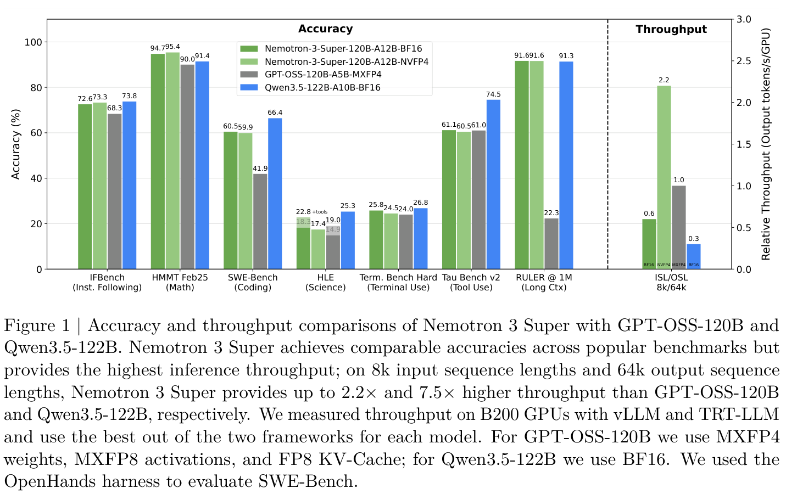
（接原文第 1 页。）
以及侧重多步工具使用行为的后训练总量。为了在这一多样的长时程任务集合上有效训练，我们大幅增强了 RL 基础设施的韧性，实现大规模异步训练。这一扩展后的 agent 训练方案，在软件工程、终端使用和通用工具使用基准上，相比 Nemotron 3 Nano 都带来了显著提升。
我们在 Nemotron Developer Repository1 公开分享 Nemotron 3 Super 的训练方案。我们还开放发布以下内容：
本报告分为三个主要部分：预训练（§2）、后训练（§3）和量化（§4），每一部分都详细介绍我们的方法。
本节重点介绍 Nemotron 3 Super 120B-A12B Base 的关键特性，详述其 Mamba-Attention MoE 架构、NVFP4 预训练、超参数配置、长上下文扩展，以及用于预训练的 25 万亿 token 语料。我们还展示，Nemotron-3 Super 120B A12B Base 在一套全面的基准上，比其他公开的先进模型——包括 Ling-flash-Base-2.0 和 GLM-4.5-Air-Base——获得更高的准确率。
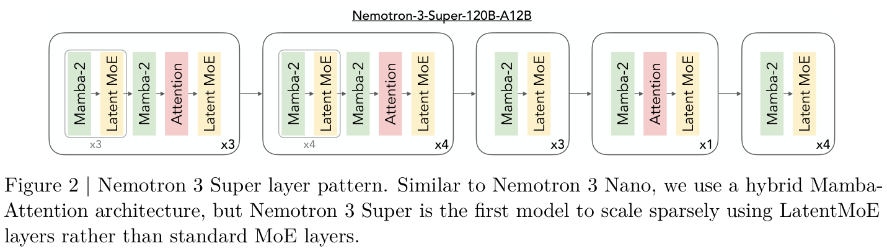
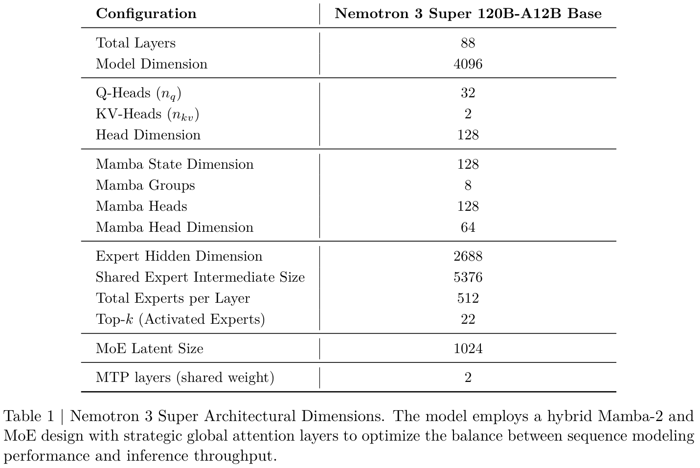
Nemotron 3 Super 120B-A12B Base 扩展了 Nemotron-3 Nano（NVIDIA, 2025c）引入的 Mamba-Attention MoE 架构。我们将这一基础扩展至总计 120.6B 参数，同时将每次前向传播的激活预算限制在 12.7B 参数（不含 embedding 为 12.1B）。该架构包含三大核心支柱：稀疏 LatentMoE 扩展（§2.1.1）、用于加速推理的 MTP（§2.1.2），以及周期性的混合交错模式（§2.1.3）。
MoE 架构已成为在固定推理成本下最大化准确率的有前景方法，使模型能够扩展参数量，同时保持每 token 的 FLOPs（FLOP）不变。现有 MoE 设计主要由高层的稀疏性论据驱动，并针对离线、吞吐量导向的设置优化，很少考虑施加严格延迟、内存带宽和通信约束的在线部署。每 FLOP 准确率反映计算效率，而每参数准确率则涵盖内存占用、内存带宽、路由引发的通信和分片开销。忽略这些因素，可能产生在总体计算量上看似高效、在实际中却存在大量低效的架构。
基于这些观察，我们从硬件与软件协同设计的角度重新审视 MoE 设计。通过系统分析现有 MoE 系统在吞吐量—延迟 Pareto 前沿上的表现，结合准确率测量和理论分析，我们识别出主流 MoE 设计中限制单位推理成本准确率的结构性低效。由此，我们提炼出以下高效扩展 MoE 的设计原则：
原则（1）—（3）表明，隐藏维度 \(d\) 是最值得缩减的轴，可以在不显著降低准确率的情况下，同时改善吞吐量导向与延迟导向的场景。原则（4）给出了 \(d\) 在不发生崩溃的情况下可缩减到的下限。原则（5）表明，增加 \(N\) 和 \(K\) 能提升质量；由于内存带宽和通信量随 \(K\) 线性增长，我们可以将 \(K\) 增加 \(\alpha\) 倍，同时将 \(d\) 减小相同的 \(\alpha\) 倍，从而以相近的推理成本获得更高准确率。基于这些洞见，我们开发了 LatentMoE（Elango et al., 2026），这是一种旨在以相近推理成本获得比标准 MoE 更高准确率的 MoE 架构。
LatentMoE 架构如图 3b 所示。每个输入 token \(x \in \mathbb{R} ^{d}\) 首先被投影
（本句接原文第 5 页。）
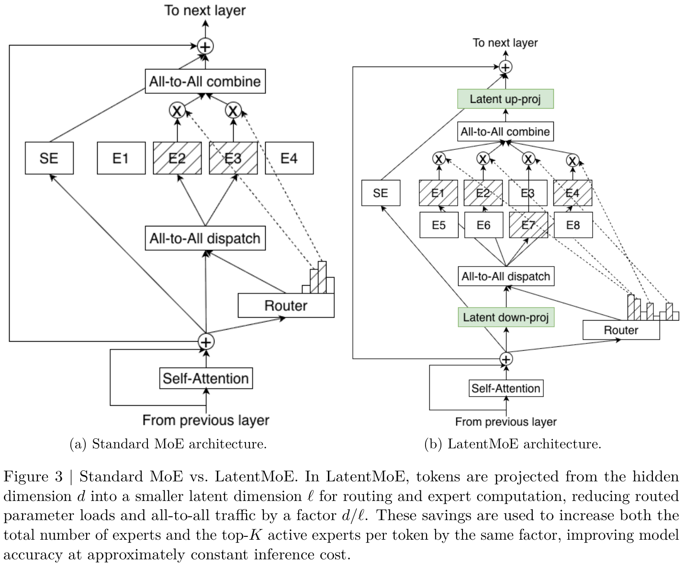
（接原文第 4 页。）
到较低维的潜在空间 \(\mathbb{R} ^{\ell}\)，使用可学习的下投影矩阵 \(W_{↓} \in \mathbb{R} ^{\ell \times d}\)。随后，压缩后的表示被路由到扩展的专家集合，这些专家完全在该潜在空间中运算。专家计算后，输出被聚合，并通过可学习的上投影矩阵 \(W_{↑} \in \mathbb{R} ^{d\times \ell}\) 投影回维度 \(d\)。将路由专家计算和 all-to-all 流量转移到潜在空间，相比标准 MoE，将每个专家的权重读取量和通信负载都降低了 \(d/\ell\) 倍。我们利用这些节省，将专家总数从 \(N\) 增加到 \(N' = N \cdot d/\ell\)，并将每 token 的 top-K 激活专家数从 \(K\) 增加到 \(K' = K \cdot d/\ell\)。维度的减小抵消了专家数和 \(K\) 的增加，从而以相近的计算与通信预算获得更高模型质量。为了保持质量，所有非路由计算——包括路由门控（门控网络）、共享专家计算和非专家层——仍保持完整隐藏维度 \(d\)，因为这些计算不会显著加剧所针对的瓶颈。更多细节请参阅 LatentMoE 技术报告（Elango et al., 2026）。
Nemotron-3 Super 引入 MTP 目标，以同时提高建模质量和推理效率。与传统的下一 token 训练不同，MTP 优化模型，使其在每个位置预测多个未来 token（Gloeckle et al., 2024；DeepSeek-AI, 2025c）。这
（本句接原文第 6 页。）
（接原文第 5 页。）
鼓励表示捕获多步依赖和更长距离的结构，使验证损失和下游基准准确率都得到持续改善。
除质量提升外，MTP 还支持原生 speculative decoding。辅助预测头充当内部草稿模型：在推理时，它们生成候选续写，主模型通过一次前向传播进行验证。这大幅降低了 decoding 延迟，同时只增加极少的 FLOP——远少于外部草稿模型所需的量。虽然 speculative decoding 在小 batch 大小时特别有效，近期研究表明，它也能提高较大 batch 和稀疏 MoE 场景下的吞吐量（Huang et al., 2025）。
标准 MTP 实现使用 \(N\) 个独立预测头，每个预测头训练为预测固定偏移（例如 \(n + 2\)，…，\(n + N + 1\)）。虽然训练时有效，但这将 speculative decoding 限制为最多 \(N\) 个草稿 token。更长的草稿需要增加 \(N\)，或者以自回归方式复用某个按固定偏移训练的预测头。
复用固定偏移预测头会引入训练与推理的不匹配：训练时预测头基于真实隐藏状态，而推理时则基于自身生成的状态。这种分布偏移常使接受率随草稿长度增加而下降。
Nemotron-3 Super 通过在训练期间让多个 MTP 预测头共享参数来解决这一限制，形成一个接触多种偏移的统一预测头。这种共享权重的形式，在各个预测跨度上正则化该预测头，并增强其对自回归草稿生成中遇到的自生成隐藏状态的稳健性。因此，推理时可以递归应用同一预测头，生成更长草稿，并保持更稳定的接受行为。虽然接受率会自然地随草稿长度增加而下降，但相比独立训练的偏移预测头，下降明显更温和。这样可以实现更有效的 speculative decoding，而无需增加参数或单独的草稿模型。
我们使用专为 speculative decoding 设计的基准 SPEED-Bench（Abramovich et al., 2026）评估 MTP 质量。表 2 给出草稿长度固定为 7 时的平均接受长度（每次验证步骤接受的 token 数）。Nemotron-3 Super 获得最高的整体平均接受长度（3.45），在所有领域都优于 DeepSeek-R1，并与 Qwen3-Next 保持竞争力。
图 4 绘制了接受率与草稿 token 索引的关系。正如预期，所有模型的接受率都随草稿深度单调下降。不过，Nemotron-3 Super 在每个草稿位置都保持高于 DeepSeek-R1 的接受率，在大多数索引处接近或超过 Qwen3-Next。尤其是在递归草稿生成最具挑战的较大索引（4—7）处，差距更为明显。这一行为表明，共享预测头的自回归设计在更长的推测展开中具有更好的稳定性。
整体而言，Nemotron-3 Super 的 MTP 同时改善表示学习与 decoding 效率，无需依赖外部草稿模型，即可在更长草稿长度下实现更高接受率。这些接受率提升转化为 Blackwell 硬件上更优的服务效率。如图 5 所示，通过 MTP 增加草稿深度（\(D = 1\) 至 \(D = 3\)），显著移动了吞吐量—延迟 Pareto 前沿：对于任意给定的用户延迟中位数，相比禁用 MTP 的基线，都能提供更高的总输出 token 数/秒（TPS）。
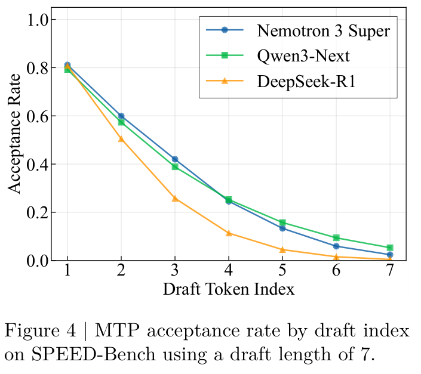
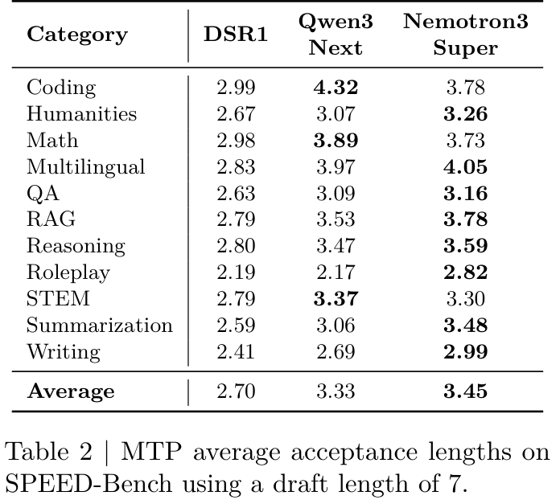
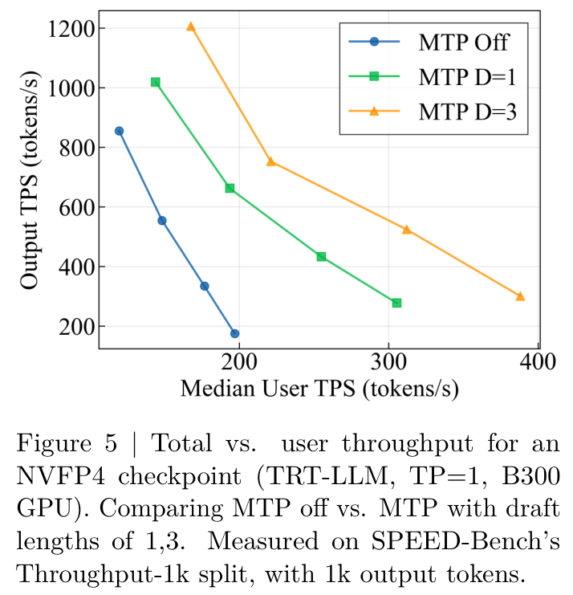
Nemotron 3 Super 采用 MoE 架构，旨在最大化推理吞吐量——尤其是长上下文推理——同时保持大规模稠密 Transformer 的建模能力。现代序列模型的主要系统瓶颈，是自 attention 层中 KV cache 的二次增长。为解决这一问题，我们主要使用 Mamba-2 模块（Dao & Gu, 2024），其在生成期间采用固定大小的状态，大幅降低内存开销和延迟。
88 层堆栈遵循周期性交错模式，其中 MoE 层与 Mamba-2 模块配对。Mamba 提供高效的线性时间序列建模，而少量自 attention 层被策略性地插入，作为全局“锚点”，使整个堆栈能够实现所有 token 间的交互和长距离信息路由。这种混合交错既保留全局依赖建模，又将大多数计算卸载到更高效的 Mamba 和
（本句接原文第 8 页。）
（接原文第 7 页。）
稀疏 MoE 组件。表 1 与图 2 全面概括了混合堆栈的结构参数和具体交错模式。
Attention 层采用 GQA，包含 32 个查询头和 2 个 KV 头（头维度为 128）。与先前的 Nemotron 模型一致，我们省略位置 embedding、dropout 和线性层中的偏置项，使用 RMSNorm 进行归一化，并使 embedding 与输出权重保持不绑定。这种配置支持最高 1M token 的上下文长度。
稀疏扩展进一步提升效率。每个 MoE 层对每个 token 只激活专家子集（top-22 路由），使模型扩展至 120.6B 总参数，同时将每次前向传播的激活参数预算保持在 12.7B。
整体而言，线性时间 Mamba 模块、稀疏激活的 MoE 容量和策略性放置的 attention 锚点协同工作，使 Nemotron 3 Super 具备强大的长上下文表现，同时仍针对现代硬件上的实际部署进行优化。
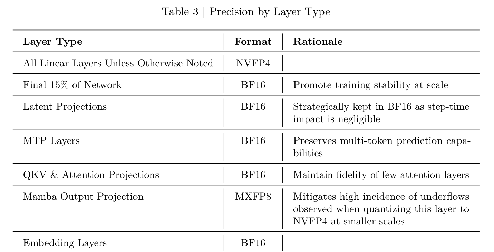
Nemotron 3 Super 使用 Nemotron 3 白皮书（NVIDIA, 2025c）详述的 NVFP4 预训练方案进行训练。除表 3 另有说明的层外，所有线性层都使用 Transformer Engine 提供的开源 NVFP4 GEMM 内核，以 cuBLAS 为后端（NVIDIA Corporation, 2024），进行 fprop、dgrad 和 wgrad GEMM 训练。此框架按照 NVIDIA（2025d）首次介绍的方案，将权重、激活和 gradient 量化为 NVFP4。权重采用二维（2D）块缩放量化为 NVFP4，以保持前向和反向传播中量化权重的一致性。Gradient 与激活沿 GEMM 归约轴采用一维（1D）块量化为 NVFP4。对 wgrad 的输入执行随机 Hadamard 变换（RHT），并对 gradient 张量应用随机舍入。NVFP4 格式采用 E2M1 元素格式、16 元素微块、E4M3 微块缩放因子，以及第二级 FP32 全局缩放。Nemotron 3 Super 展示了最高 25T token 的大规模稳定 NVFP4 训练。
训练 Nemotron 3 Super 时，我们观察到零值权重 gradient 元素的数量增长，并调查其根本原因，以验证训练健康状况。幅值
（本句接原文第 9 页。）
（接原文第 8 页。）
模式在部分专家层中出现，表现为 FC1 输出通道及其对应 FC2 输入通道的范数趋于零（图 6）。预训练结束时，零值权重 gradient 元素占总参数的 7%，似乎与这些幅值模式相关。我们认为，NVFP4 量化增加了权重 gradient 中真正零值的发生率，而这些值本来可以更容易地用 BF16 或 MXFP8 表示。这些层采用 NVFP4 训练时，低范数通道可能衰减得更快。
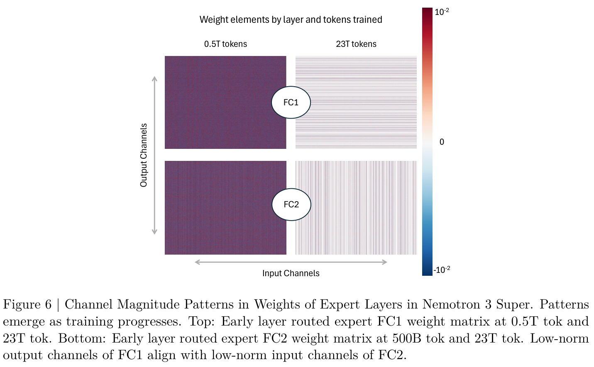
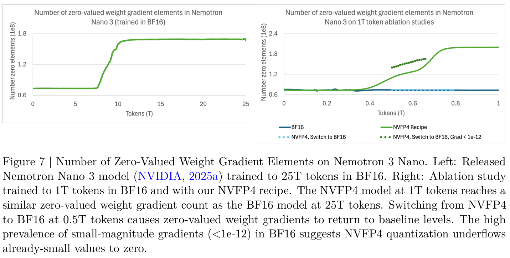
我们比较了使用 BF16 和 NVFP4 训练 1T token 的相同 Nemotron 3 Nano 模型（NVIDIA, 2025a），发现相同 token 训练量下，NVFP4 预训练产生的零值权重
（本句接原文第 10 页。）
（接原文第 9 页。）
Gradient 大约多 3 倍。当一个部分训练的 NVFP4 模型切换回 BF16 时，零值权重 gradient 的数量回到基线水平。BF16 模型仍含有许多小幅值 gradient（\(<1e\)-12），但 NVFP4 量化会使这些值下溢为零（图 7）。我们从路由专家层采样权重、激活和 gradient 张量，在 500B token 时观察到 FC2 的 dgrad 中存在较高下溢率，主要因为二维权重量化块横跨了高幅值和低幅值通道。FC2 的 dgrad 下溢通过 gradient 反向传播，在 FC1 的 wgrad 中产生零值。在 750B token 时，我们观察到 FC1 的 fprop 中下溢率较高，从而在 FC2 的 wgrad 中产生零值（图 8）。训练了 1T token 的 NVFP4 模型，表现类似于训练时间长得多的 BF16 模型。10T token 后，已发布、采用 BF16 训练的 Nemotron 3 Nano 模型（NVIDIA, 2025a），达到与训练至 1T token 的 NVFP4 模型相近的零值权重 gradient 元素数量（图 7）；检查早期专家层权重矩阵时，也发现了类似的通道幅值模式。这些关于 Nemotron 3 Nano 架构的结论，为理解 Nemotron 3 Super 的通道幅值模式及零值权重 gradient 元素增长提供了见解。
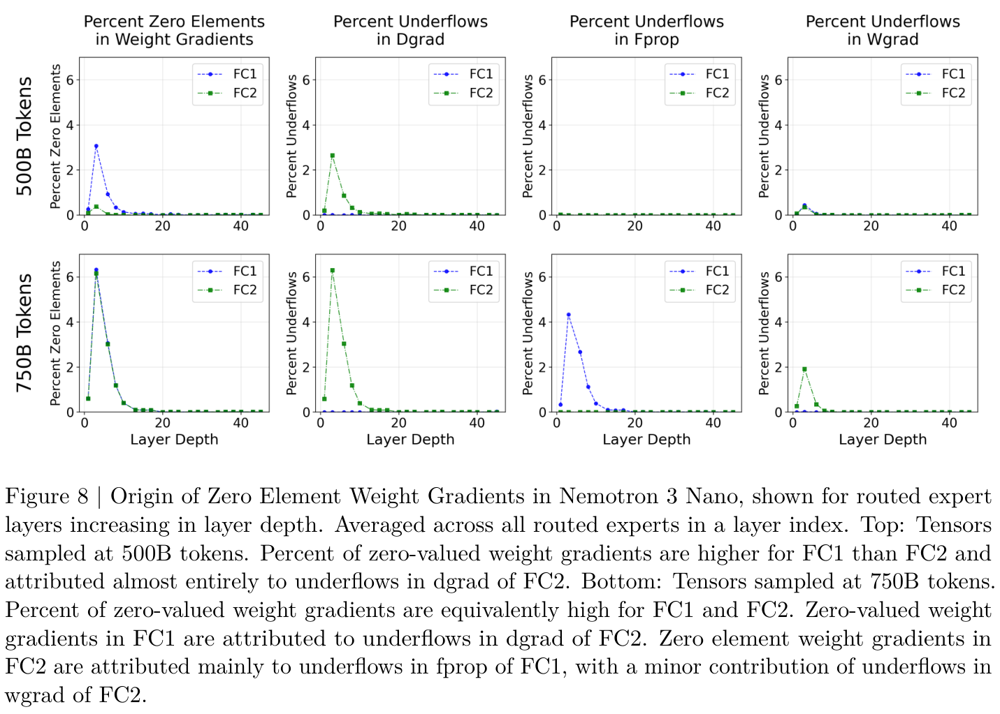
延续我们先前的 NVFP4 预训练工作（NVIDIA, 2025d），我们评估了在学习率退火之前将所有张量切换到更高精度，是否会对 Nemotron 3 Super 有益。我们在 19T token 时（退火前 1T token）将所有张量提升为 MXFP8，并继续训练至 20.6T token。虽然这改善了损失轨迹，但并未带来下游任务准确率提升（图 9）。因此，最终的 Nemotron 3 Super 模型在整个 token 训练跨度中均使用我们的 NVFP4 方案进行预训练。
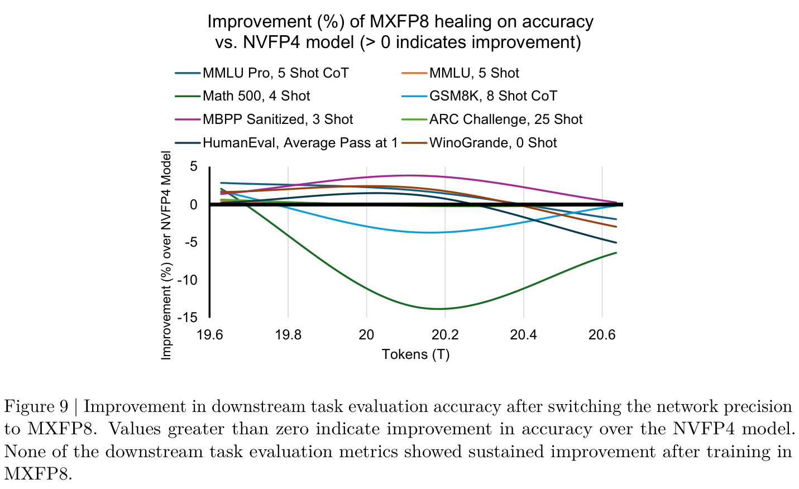
这里介绍自 Nemotron 3 Nano（NVIDIA, 2025a）以来，我们新增到预训练中的几个数据集。我们在 HuggingFace 上以 Nemotron-Pretraining-Specialized-v1.1 发布这些数据集。
为了提升 Python 问题解决能力，我们合成生成了由 Python 问题和解答组成的数据集。使用从 Nemotron-Pretraining-Code 数据集及 GPT-OSS-120B 整理出的、包含数千种编程概念的分类体系，我们从 HumanEval 基准数据集（Chen et al., 2021）中提取了高层编程概念。对提取的分类表示去重后，我们共收集了 91 个概念。
使用这些提取出的概念，我们通过 GPT-OSS 20B 进行开放式生成，生成考查这些概念的 Python 编程问题，并要求它生成具有描述性函数名的问题，将问题描述放入函数 docstring 中。为按预训练规模生成这些问题，我们在每次生成中组合最多四个概念，每组概念最多生成五道问题。最终共生成约 1400 万道问题。
问题生成后，我们使用 GPT-OSS 120B 为每个问题生成五份自包含的解答。为避免在这些数据上训练的模型偏向生成冗长解答，我们要求 GPT-OSS 120B 将解答限制在最多 60 行。我们为每道问题生成五份解答，在获得约 2300 万个问题—解答对后停止生成。
作为生成此数据集的最后一步，我们彻底清理了生成的问题—解答
（本句接原文第 12 页。）
（接原文第 11 页。）
对。清理包括以下步骤：我们检查 GPT-OSS-120B 是否加入了 GPT-OSS-20B 生成的原始问题中未指定的额外 import；丢弃所有不满足这一条件的解答。我们只解析 GPT-OSS-120B 提供的解答，并将其追加到 GPT-OSS-20B 生成的问题中，形成最终问题—解答对。我们发现 GPT-OSS-120B 经常修改原始问题；上述处理确保保留原始问题构造提示规定的格式。我们通过生成抽象语法树（AST）来检查最终问题—解答对是否为有效 Python 代码。如果最终函数无法通过最终 AST 检查，就将其丢弃。上述清理流程最终得到组成此数据集的 1500 万道问题。
为创建此数据集，我们使用 Qwen3-235B-A22B（基础模型）和 gpt-oss-120b 生成算法类 Python 问题。我们采用极简提示，例如“编写一个函数”“编写一个 Python 函数”或“为学生编写一道编程问题和解答”，并可选指定难度（简单、中等或困难）。为确保多样性和质量，我们提示 gpt-oss-120b 重写这些样本，处理边界情况、增加单元测试，并以多种方式重新格式化输出。
在另一变体中，我们要求 gpt-oss-120b 生成 LeetCode 风格的题目和答案，同样随机选择难度。我们进一步用 gpt-oss-120b 对解答正确性评分，并在解答不正确时进行纠正。总体而言，这类近乎无条件的提示确实导致很高的重复率。为解决这一问题，我们发现，根据 gpt-oss-120b 为每道问题生成的约 5—8 词短标题进行去重十分有效。
所有样本都按以下方式针对 HumanEval（Chen et al., 2021）、MBPP（Austin et al., 2021）、CRUXEval（Gu et al., 2024）和 LiveCodeBench（Jain et al., 2024）进行去污染：首先，移除与这些基准解答完全匹配的样本；其次，使用 Qwen3-Embedding-0.6 编码问题与解答，过滤与任一基准相似度 >0.8 的数据。
尽管按通常的预训练标准，此数据集较小（0.2B token），我们认为它有助于教授边界情况处理和程序执行推理等编码实践。在将这些数据加入、重新训练 25T token 预训练的最后 100B token 时，相比 Nemotron 3 Nano 基础 checkpoint，HumanEval、MBPP 和 CRUXEval-O 提升了 1—2 个点，支持这一判断。
我们依据整理的列表，生成覆盖多种格式的经济学多项选择题，包括完形填空、计算、句子补全和多答案选择，涵盖微观经济学、宏观经济学和计量经济学的关键主题与术语（例如“统计推断与假设检验——第一类错误”和“通货膨胀与价格水平——通货膨胀率”）。对每个主题—术语对，我们使用 Qwen3-235B-A22B-Thinking-2507 生成多个问题，每道题附带详细、逐步且格式清晰的解答。为增强多样性，我们进一步提示模型，以初始输出为参照创造全新的原创问题。每个问题—解答对都经过基于模型的验证，检查清晰性、歧义、可解性和准确性。
我们合成了一组覆盖多种任务的形式逻辑问题和解答，例如在自然语言与谓词逻辑或命题逻辑之间转换、推导条件
（本句接原文第 13 页。）
（接原文第 12 页。）
命题的前件，以及使用间接真值表或完整真值表解决逻辑问题。我们在提示中加入随机人物设定2、字母和/或逻辑联结词（即 ∧、∨、⊃、\(\equiv\)、∼），使生成的情境、前提和公式具有变化。我们使用 Qwen3-235B-A22B-Thinking-2507 生成并评估这些问题与解答。
我们从 MMLU 辅助训练集（Hendrycks et al., 2021b）自举构建多项选择题（MCQ）数据集；该训练集汇集 ARC（Clark et al., 2018b）、MC_TEST（Richardson et al., 2013）、OpenBookQA（Mihaylov et al., 2018a）、RACE（Lai et al., 2017）等来源的辅助 MCQ 数据。以每道种子问题为起点，我们提示 Qwen3-235B-A22B（Yang et al., 2025）生成遵循相同任务格式和难度特征的多个相似问题，以及相应答案选项。在第二阶段，我们提示 DeepSeek-V3（DeepSeek-AI, 2025c）选择答案来解答每道生成的问题，并提供支撑其选择的知识或上下文推理。为提高答案可靠性，我们使用不同随机种子，为每道题采样多次独立的解答生成。随后对生成的答案进行多数投票，确定最一致的选项，只保留最终答案与多数一致的样本，丢弃不一致或错误的实例。
使用这一流程，我们生成约 3.5M 个 MMLU 风格 MCQ 样本（约 1.6B token），并附加明确且相关的知识或推理轨迹。我们通过消融实验评估此数据的影响：将 Nemotron-Nano-V3（NVIDIA, 2025a）的 24.9T-token checkpoint 继续训练额外 100B token，其中 1B token 来自生成的 MMLU-aux-train-SDG 数据。结果在多数基准上表现出一致提升：MMLU 从 77.22 提升至 77.51，“MATH Level 5”从 78.55 提升至 79.05，AIME-2024 从 53.3 提升至 56.7，MBPP 从 74.8 提升至 75.2。其他基准表现基本稳定，仅有小幅波动，说明合成 MCQ 数据主要增强数学和结构化推理能力，没有在其他方面引入退化。
我们采用 NVIDIA（2025a）所述的 Nemotron 3 Nano 数据混合。预训练语料涵盖 16 个高层类别。最大组成部分是网页抓取数据，我们按照 Nemotron-CC 分类体系（Su et al., 2025）将其分为五个质量组：crawl-medium、crawl-medium-high、crawl-high，表示逐步提高质量的抓取数据；以及从过滤后网页文档生成的对应合成数据 syn-crawl-medium-high 和 syn-crawl-high。除网页抓取外，混合还包括数学（Mahabadi et al., 2025；Akter et al., 2024）、Wikipedia、代码、Nemotron-CC-Code、学术文本、Crawl++、多语言数据、finepdfs（Kydlíček et al., 2025），以及合成的 SFT 风格数据集。SFT 风格数据进一步分为 general-sft、stem-sft 和 code-sft。作为 SFT 风格组成部分，我们将侧重推理的数据集纳入预训练，这源于先前发现其有效性的研究（Akter et al., 2026）。Crawl++ 由 OpenWebText、BigScience（Laurençon et al., 2023）和 Reddit 数据集组成。
数据混合旨在平衡多样性与质量：估计质量相近的来源被赋予相近权重，而更高质量的数据集在混合中获得相应更大的权重。关于数据集质量估计与混合构造的更多细节见 Feng et al.（2024）。我们采用 Feng et al.（2024）提出的两阶段课程。在第一阶段，混合强调数据多样性，以促进广泛覆盖和泛化。
2 https://huggingface.co/collections/nvidia/nemotron-personas
在第二阶段，混合转向以高质量来源（例如 Wikipedia）为主，以精进模型表现。第二阶段的转变发生在训练 token 总量的 80% 处。各阶段的具体混合如图 10 所示。
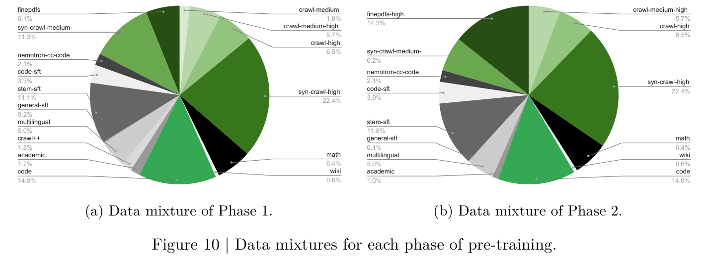
Nemotron 3 Super 120B-A12B Base 的预训练采用 Warmup-Stable-Decay（WSD；Hu et al., 2024）学习率计划，总跨度为 25 万亿 token。学习率（LR）在最初 2000 亿 token 中 warmup 到峰值 \(4.5 \times 10^{-4}\)。在持续的稳定平台阶段之后，我们对最后 5 万亿 token 采用 minus-sqrt 衰减计划，将 LR 退火至最低 \(4.5 \times 10^{-6}\)。
我们使用 AdamW（Loshchilov & Hutter, 2017）优化器，权重衰减为 0.1，动量系数 \(\beta _{1} = 0.9\)、\(\beta _{2} = 0.95\)。模型训练的序列长度为 8,192，batch 大小为 3,072 条序列，即每批约 2517 万 token。
架构采用 Mamba-MoE 混合设计，其中 MoE 层包含总计 512 个专家和 top-22 路由机制（\(k = 22\)）。我们使用 sigmoid 路由评分函数，并辅以专家偏置。为确保 120.6B 参数中的专家获得均衡使用，我们采用无辅助损失的负载均衡策略（Wang et al., 2024；DeepSeek-AI, 2025c），更新率为 \(10^{-3}\)，同时搭配系数为 \(10^{-4}\) 的标准负载均衡损失（Lepikhin et al., 2020）。
此外，我们使用损失缩放因子为 0.3 的 MTP 目标。为最大化大规模训练的计算效率和稳定性，执行采用 BF16 与 NVFP4 混合精度方案。
在 §2.4 所述 WSD 学习率计划的稳定阶段，学习率保持不变，逐个训练 checkpoint 的基准表现存在步间噪声。遵循近期权重空间合并研究（Wortsman et al., 2022；Tian et al., 2025；Ling Team, 2025），我们应用 checkpoint 合并（对近期 checkpoint 的滑动窗口加权平均），从而无需专门的学习率衰减运行，即可更准确地读出模型质量。在常规预训练流程中，评估中间 checkpoint 的模型质量需要专门的衰减运行；checkpoint 合并省去了这项成本。对于与我们相当的计划，节省的计算量可达到约 4T token（例如省去约 2 次
（本句接原文第 15 页。）
（接原文第 14 页。）
1.5T 的运行及约 2 次 0.5T 的运行），约占预训练总 FLOP 预算的 16%。
遵循 Tian et al.（2025），我们用 minus-sqrt 衰减模拟计算合并系数，每 1,000 次迭代保存一个 checkpoint（在全局 batch 大小 \(3,072 \times 8,192\) token 下约为 25B token）。预训练过程中，我们评估了 125B、250B 和 500B token 的滑动合并窗口。在 12 个基准（MMLU-Pro、MMLU、HumanEval、HumanEval+、MBPP、MBPP+、GSM8K、MATH-500、RACE、ARC-Challenge、HellaSwag、WinoGrande）上，最佳合并的非加权平均值持续比对应训练 checkpoint 高 2—4 个点。合并相对训练的计算成本很低，因此我们可在每个 checkpoint 评估全部三个窗口并选择最佳者。图 11 给出整个 25T-token 训练过程中，这种三选一最佳合并与训练 checkpoint 的对比。
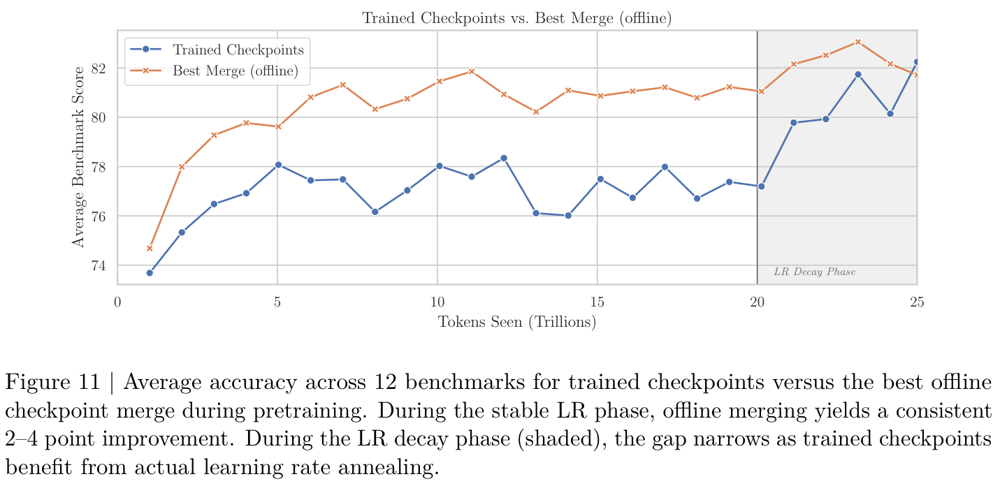
在最后 5T-token 学习率衰减阶段（20T 至 25T token），合并 checkpoint 与训练 checkpoint 之间的差距明显收窄，训练结束时两条评估轨迹大体重合。Tian et al.（2025）报告，结合合并与衰减相比单独合并没有增益，因此这种收敛符合预期。最初的 WSM 结果更进一步，显示基于合并的读出超过了衰减训练 checkpoint。在 Nemotron 3 Nano 规模架构（30B-A3B）的实验中，模拟较短（约 500B）衰减窗口时，我们复现了这种增益。但在 1T 与 1.5T 合并跨度上的直接对比，没有显示优于衰减训练 checkpoint 的改善。
我们的结论是，离线 checkpoint 合并对较短退火跨度似乎最有效。这与 Ling Team（2025）一致，他们采用相近的短衰减计划并报告基于合并的改善；相比之下，本文采用长得多的 5T 衰减，实际衰减训练可以匹敌或超过基于合并的读出。最终选定用于下游对齐的基础模型 checkpoint 本身也是一个 500B 合并；即使配合完整衰减计划，短跨度合并仍有实际用途。不过，我们的实验只探索了一种合并计划（minus-sqrt）及固定 checkpoint 粒度；其他系数方案、更细粒度的 checkpoint 窗口，或针对更长衰减跨度的合并策略，仍可能恢复短尺度上观察到的增益。各基准的细分结果见附录图 17。
与 Nemotron 3 Nano 类似，我们在预训练末尾增加长上下文阶段（LC-Phase）。在 LC-Phase 中，我们进行持续预训练（CPT），赋予基础模型长上下文能力。我们采用固定学习率 \(4.5 \times 10^{-6}\) 和全局 batch 大小 16，在 GB200 GPU 上使用 64 路 CP、2 路 TP 及 64 路 EP。我们复用 Nemotron 2 & 3 Nano 的长上下文文档问答数据集。在 Phase LC 数据混合中，文档问答数据占 20%，其余 80% 是按比例缩减的第二阶段数据。最初，我们在 1,048,576（1m）上下文长度上进行 CPT，此阶段持续 340 亿 token。之后增加另一阶段，交替训练 1m 和 4k 序列，以缓解我们在数学相关基准上观察到的轻微影响。第二阶段持续 170 亿 token。
除非另有说明，所有评估结果均通过 NeMo Evaluator \(SDK^{3}\) 和 NVIDIA 的开源 LM Evaluation Harness 容器4 收集。为便于复现，评估设置的更多细节可在 NeMo Evaluator SDK 示例文件夹5 中找到。用于评估、通过 NVIDIA 的 NeMo Evaluator SDK 打包的开源 LM Evaluation Harness 容器见此链接6。该容器基于 LM Evaluation Harness 构建，为保证公平，对所有模型应用以下修改：
表 4 展示 Nemotron 3 Super 120B-A12B Base 的准确率结果，以及与 Ling-flash-Base-2.0 和 GLM-4.5-Air-Base 的比较。
3 https://github.com/NVIDIA-NeMo/Evaluator
4 https://github.com/EleutherAI/lm-evaluation-harness
5 NeMo Evaluator 中 Nemotron 3 Super 示例
6 LM Evaluation Harness 容器
7 https://github.com/huggingface/math-verify
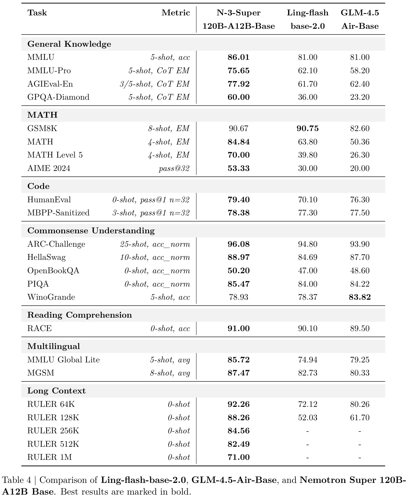
我们沿用与 Nemotron 3 Nano 相同的总体方案，但更强调 agent 任务。图 12 概括了流程。我们从 SFT 阶段（§3.1）开始，随后是三个阶段的强化学习——RLVR、SWE-RL 和 RLHF（§3.2）。最后以 MTP 恢复阶段结束。
在 SFT 中，我们扩展训练混合，以覆盖更广泛的 agent 框架和交互场景。我们还显著改进 RL 基础设施，使数千 GPU 上可靠的大规模异步训练成为可能。该基础设施使我们能够：（1）在 21 个多样环境中训练，提升跨任务稳健性；（2）在长时程 SWE 任务上训练，强化实际 agent 场景中的多步推理与问题解决能力。
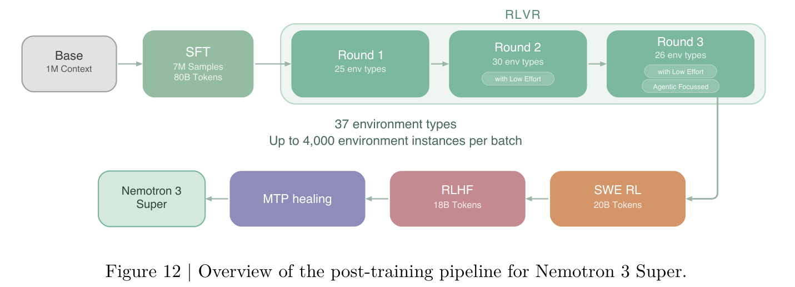
对于 Nemotron 3 Super SFT，我们重点提高数据集质量和多样性。具体而言，我们扩大了 agent 数据集，并提高其在整体 SFT 混合中的比例。聊天模板与 Nemotron 3 Nano 完全一致。此外，我们加入低思考量推理模式，让用户进一步控制推理长度。我们发现，单阶段 SFT 会使长输入—短输出场景出现明显退化。因此采用两阶段 SFT：第一阶段强调从 token 级监督学习，诱导强推理行为；第二阶段切换为逐对话归一化，避免长输出主导损失，在保留推理能力的同时恢复长输入—短输出表现。下面介绍这一方法：
对包含多个对话 \(c\) 的打包全局 batch \(\mathcal{B}\)，令 \(\mathcal{O} _{c}\) 表示对话 \(c\) 的输出 token 位置集合，\(|\mathcal{O} _{c}|\) 为其输出 token 数。Token 级负对数似然为 \(\ell _{t} = -log p_{\theta}(y_{t} | x, y_{<t})\)，我们使用：
阶段 1：token 级（全局）平均。我们最小化打包全局 batch 中所有输出 token 的平均损失：
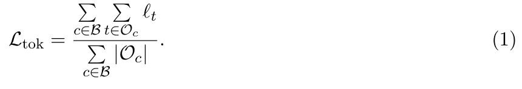
这相当于对所有对话的输出 token 对数概率求和，并以输出 token 总数归一化。
阶段 2：样本级平均。随后，我们切换为逐对话归一化的损失，并对各对话等权平均：
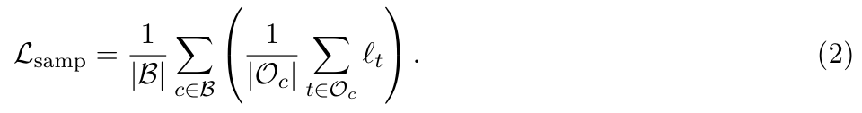
此阶段在跨 batch 平均之前，用每个对话自身的输出 token 数进行归一化，降低长输出的主导作用。
第一阶段的 SFT 使用 256k 序列长度打包、全局 batch 大小 64、固定学习率 \(1e-5\)，并以 30k 样本 warmup。第二阶段使用 512k 序列长度打包，纳入长度最高 512K 的长上下文数据，全局 batch 大小为 32，学习率固定为 \(1e-5\)。
我们继续使用预训练中相同的共享权重 MTP 预测头训练 Nemotron 3 Super，以保留多步预测的准确率收益和 speculative decoding 的推理收益。具体而言，我们训练两个共享参数的 MTP 层，并通过按 token 损失计算、缩放因子为 0.3 的辅助损失，优化组合目标。
我们复用 Nemotron 3 Nano SFT 数据集中的 Chat、Infinibyte 和 Formal Proofs。我们使用新的教师模型（DeepSeek v3.2、Kimi K2）更新 Competition Math、Competition Code、Conversational Tool Use、Multilingual 和 Science 数据集。下面介绍新增或大幅修改的 SFT 数据集。
软件工程。我们整理来自真实 GitHub issue 的编码任务数据集，训练 Nemotron 3 Super 的自主软件工程能力，包括代码探索、任务跟踪、问题复现和缺陷修复。我们使用 SWE-Gym（Pan et al., 2025）、R2E-Gym（Jain et al., 2025）及 SWE-rebench（Badertdinov et al., 2025）数据集中的 issue 和容器化执行环境。对于 R2E-Gym，我们用 Qwen3-Coder-480B-A35B-Instruct 重新生成问题陈述。我们使用 Qwen3-Coder-480B-A35B-Instruct 作为教师模型，从 OpenHands agent 框架中蒸馏轨迹。
随着 agent 命令行界面（CLI）工具出现，软件开发格局发生显著变化，从 2021—2023 年的“自动补全”时代迈入自主执行阶段。Claude Code、OpenCode、OpenAI Codex 等框架显著改进的同时，模型已能作为主动的数字协作者，执行多步推理、长时程操作及端到端任务编排。
我们建立了一组基础种子任务，旨在复现 agent CLI 中用户通常发起的操作。完整流程见图 13。我们使用 NeMo Data Designer（The NeMo Data Designer Team, 2025），根据这些环境中通常执行的 24 种不同操作的分类体系，生成约 20k 查询。随后，我们采用 GPT-OSS 120B（OpenAI, 2025），在 LLM-as-a-Judge 框架中滤除
（本句接原文第 20 页。）
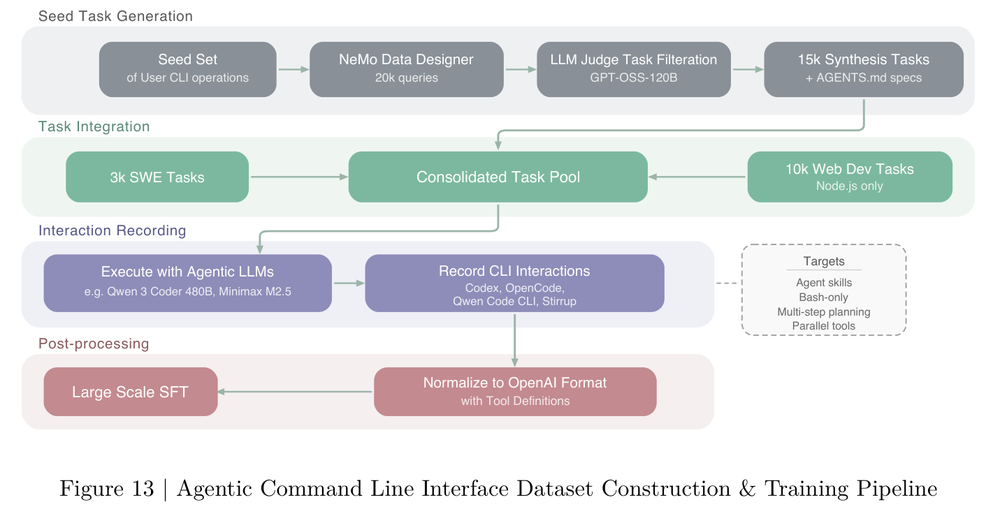
（接原文第 19 页。）
引用已有代码库或修改现有文件的任务。这一措施确保模型不会在空目录中尝试修改操作；这种情况常在失败的执行循环中导致冗余且耗尽的工具调用。所得数据集包含约 15k 个侧重直接合成解决方案的任务。为进一步增强生成输出的多样性，我们给每个任务附加一份相当于 AGENTS.md 的 Markdown 规范。这些文档施加额外约束和架构要求，有效缩小设计空间，并要求 agent 提供更复杂、多样的解决方案。
由于我们删除了所有需要已有代码库的任务，因此用约 3000 个具有挑战性、附带既有仓库及特定 git hash 提交的 SWE 任务来扩充该任务集合。我们在现有 issue 描述前加上简单提示，说明执行环境未安装相应库，因此应避免执行单元测试。这一审慎决定旨在大幅减少为每个 SWE 任务支持逐样本容器执行所需的工程投入，减少工具调用次数，并避免多轮单元测试执行产生大量工具输出。这还进一步放宽 agent 解决 issue 的约束，因为没有专门的 SWE 提示指导它完成任务。最后，我们以用户常见需求中 100 种细粒度任务分类为种子，合成 10k 个 Web 开发任务，并应用 LLM-as-a-Judge 去除需要已有仓库的任务。我们不对这些任务施加限制，只提供 Node.js 环境，并期望 agent 自行配置和安装所有依赖及插件。
应用这些任务集合，我们记录 Qwen-3-Coder-480B（Qwen, 2025）和 Minimax M2.5（MiniMax AI, 2025）等高性能开源 agent LLM 与 Codex、OpenCode、Qwen Code CLI、Stirrup 等各种 CLI 环境的交互，进行蒸馏。这些交互轨迹随后经过过滤，归一为带有不同工具定义的标准 OpenAI 消息格式，并用于大规模 SFT，以有效地将 agent 操作知识 embedding 模型。对每个 agent CLI，我们研究其中存在且常用的各项能力，使用相同任务集合针对不同能力进行训练，例如 Agent Skills、工具限制（仅 bash 执行）、向用户提出澄清问题、单次与
（本句接原文第 21 页。）
（接原文第 20 页。）
多步规划、静态和动态多轮对话，以及并行工具调用，具体取决于相应 CLI 是否支持这些能力。
长上下文。我们用更全面的合成数据流程扩展 Nemotron 3 Nano 的长上下文 SFT 数据集。为提升长上下文多文档推理，我们使用预训练混合中的长序列构建合成 SFT 数据集，其内容包括书籍、论文、财务报告、代码仓库等。首先按主题/领域聚类这些文档，再拼接相关文档，达到 128K、256K 或 512K token 等目标序列长度。对每个长上下文样本，我们使用 LLM 生成一个或多个问答对。提示要求问题涉及跨文档或跨章节导航，确保信息分散而非局部集中，并严格强制多跳推理，至少要求 4—7 个不同的检索或推理步骤。这些步骤必须包含计算或逻辑处理，避免简单复制粘贴，并且经常包含明确的格式指令。接着，我们为每个上下文—问题对生成 8 条独立推理轨迹，通过精确匹配或 LLM 评判，采用语义多数投票将答案分组；从得到的多数组中选出推理轨迹最短的答案。此外，我们生成七种合成推理任务，提高模型按顺序从左至右处理上下文的能力。具体而言，将使用 Qwen3-235B-A22B-Thinking-2507 生成的合成片段拼接成长输入上下文。思考轨迹由基于规则的推理步骤串联构成，每步包含输入上下文的相关摘录及跟踪元数据，例如与查询相关片段的出现频次。我们还通过拼接 Meyer & Corneil（2025）的记录，构造达到所需序列长度的长上下文样本。问题设计强调跨记录的多跳推理和信息聚合。上下文、问题与答案使用预定义模板格式化，真实答案通过对底层记录执行 SQL 查询获得。
金融推理。为构建大规模金融推理训练语料，我们使用基于模板的合成数据生成（SDG）流程，将整理的种子集合扩展为数十万个有依据的问答对。流程从 SecQue 基准（BenYoash et al., 2025）获取 565 道专家编写的种子问题；该数据集的金融分析问题以 SEC 10-K 和 10-Q 申报文件为依据。这些种子在 \(S\)&P 500 公司8与财政年度（2019—2024）之间进行组合扩展，其中比较题仅限同一 GICS Sub-Industry 中的公司对，以保持语义连贯。GPT-OSS-120B 改写每个模板实例，每种组合最多产生三种不同表述。所得问题使用原始 SecQue 元数据映射至相关 SEC 文件章节，相应文档按可配置 token 限制转换为 Markdown。答案生成采用 GenSelect 策略（Toshniwal et al., 2025）：使用 GPT-OSS-120B 和不同随机种子为每题采样五个候选答案，再由较大评判模型 Qwen3-235B-A22B 根据数值准确性、金融方法和逻辑健全性选出最佳答复。随后，较小模型 Qwen3-30B-A3B 将各对分类为 ANSWERABLE 或 UNANSWERABLE，只保留含完整、实质性答复的样本。在 SFT 前，SDG 输出经过基于百分位数的 outlier 移除与去重。最终数据集含 366,243 个带推理轨迹的金融问答对。
CUDA。我们使用基于 DeepSeek-R1 与 GPT-OSS-120B 的合成数据生成流程，构建包含 100K 样本、用于内核生成、修复和优化的大规模合成 CUDA 数据集。种子问题来自常用开源库、NVIDIA 库 API 和 BackendBench（Saroufim et al., 2025）。这些种子用于生成元组
（本句接原文第 22 页。）
8 https://en.wikipedia.org/wiki/List_of_S%26P_500_companies，访问于 2025 年。
（接原文第 21 页。）
，形式为（PyTorch 参考实现，CUDA C++ 内核）及（自然语言规范，CUDA C++ 内核），每个都附有推理。对每个种子条目，生成多个候选内核，并在内部 CUDA 评估环境中严格验证正确性。随后按性能对通过验证的内核排序，保留性能最高者。此外，我们收集内部 CUDA agent 的轨迹，产生（PyTorch 参考实现，错误 CUDA C++ 内核，错误消息，纠正后的 CUDA C++ 内核）和（PyTorch 参考实现，缓慢 CUDA C++ 内核，Nsight Compute 日志，优化后的 CUDA C++ 内核）形式的样本。利用公开文档和官方代码样例，遵循与 CUDA-C 数据相同的形式，我们生成更多 PyTorch 参考实现、带推理链的对应 CUDA 库实现，以及对齐的自然语言规范。这些库包括 Thrust、CUB、cuBLAS、cuDNN、cuSPARSE、cuRAND 和 cuSOLVER。
安全性。相比 Nemotron 3 Nano，我们结合稳健的提示库与两阶段合成答复生成策略，显著增强了安全框架。保留 Nemotron Content Safety v2（Ghosh et al., 2025）、Gretel Safety Alignment v1（Gretel, 2024）、Harmful Tasks（Hasan et al., 2024）和 Red-Team-2K（Luo et al., 2024）中覆盖内容安全及常见越狱技术的核心提示，同时加入针对诱发过度拒绝、人口群体偏见和版权内容复现的新合成提示。我们还扩大越狱策略覆盖，更好地捕获包括间接提示注入攻击在内的新兴对抗技术。
相对 Nemotron 3 Nano，我们的主要进展是明确的答复策略框架。对每个提示，综合提示元数据、标注安全类别，以及一组轻量辅助分类器的预测，推断答复策略；这些分类器检测自伤风险、针对人口群体或 embedding 对抗指令等属性。我们将该决策过程建模为多类别分类问题，每个类别对应一种与安全指南一致的答复模式。这些模式规定模型应提供热线信息等支持资源、给出附简短说明的拒绝，还是忽略恶意内容并回答请求中的良性部分。这确保答复在多样的安全敏感场景中保持安全、符合上下文且一致。
遵循审慎对齐框架（Guan et al., 2025），我们采用两阶段生成：分别整理推理轨迹和最终答复，但使两者都与答复策略一致。第一阶段构建简洁推理轨迹，指导模型反思提示的安全属性，明确识别请求为何可能不安全或涉及策略，以及哪些约束应支配答复。第二阶段基于该推理轨迹生成最终答复，确保遵循预定义答复策略及行为指南。这种结构化分离鼓励审慎反思安全指南，同时生成一致、遵守策略且符合上下文的答复，确保最终答复遵循安全策略并尽量减少不必要地提及这些策略。最后，我们应用内容审核分类器，滤除被标记为不安全的答复，提供额外保障以确保与安全目标对齐。
搜索。为提升搜索能力，我们使用 NeMo Data Designer（The NeMo Data Designer Team, 2025）生成合成搜索 agent SFT 数据集。流程先构建以 Wikidata 知识图谱（Vrandečić & Krötzsch, 2014）为依据的种子提示：使用 SPARQL（Harris & Seaborne, 2013）查询约 25 种已验证实体类别（城市、大学、电影、化学元素等）中连接丰富的枢纽实体，随后在图中进行 4—8 跳随机游走，并利用停止节点列表、排除元关系规则和最小路径长度阈值过滤退化路径。每条有效游走产生一个起始实体、一串
（本句接原文第 23 页。）
（接原文第 22 页。）
事实关系，以及最终答案实体。
随后，Data Designer 分三阶段处理这些种子：（1）草拟阶段将结构化知识图谱游走转为自然语言多跳问题；（2）混淆阶段改写问题，隐藏中间实体并消除面包屑式串联，形成求解者必须自行拆解的搜索谜题查询；（3）agent 阶段由 MiniMax-M2（MiniMax AI, 2025）通过 Tavily（https://tavily.com）MCP 搜索工具发起网页搜索，解答混淆后的问题，并产生带支持 URL 的有依据搜索轨迹。每条所得 SFT 记录都是多轮对话，助手轮次将 CoT 推理与结构化工具调用交错，工具响应轮次以 JSON 返回搜索结果，在平均每轨迹 12 次工具调用中保留完整的“思考—行动—观察”循环。最终的结构化输出阶段将 agent 原始答复归一为经验证的 JSON schema。
终端使用。用于增强终端能力的数据集遵循 Nemotron-Terminal（Pi et al., 2026）所述的双流 Terminal-Task-Gen 方法，共包含 84,864 个样本。此流程结合对现有高质量数据集的适配，以及基于全面终端技能分类体系的合成任务生成。来源分布为 68,924 个合成样本、8,125 个来自 Nemotron-Cascade-Math 的样本，以及 7,815 个来自 Nemotron-Cascade-Code 的样本（Wang et al., 2025a）。轨迹构建主要使用 DeepSeek-V3.2（DeepSeek-AI, 2025a），通过 agent 执行—反馈循环，在隔离的 Docker 环境内生成逐步解答轨迹。全部样本都使用 Terminus 2 agent 框架（Merrill et al., 2026）作为底层支架，提供统一的终端工具集合和结构化交互协议，以保持长时程轨迹的一致性和质量。
多语言。我们的多语言数据结合英语 SFT 样例的合成翻译与句子级平行语料，以改善机器翻译。我们复用 Nemotron 3 Nano 的逐行翻译流程，使用 Qwen2.5-Instruct-14b 翻译到六种语言（德语、西班牙语、法语、意大利语、日语和中文）。翻译后进行过滤，移除语言错误的样本及其他常见失败模式。我们观察到一种反复出现的现象：翻译破坏提示规范与答案格式之间的对齐，而英语数据通常保持这种一致性。初步测试中，这种不匹配导致指令遵循失败。为缓解问题，我们加入使用 Qwen3-4B-Thinking-2507 的轻量后编辑步骤，自动恢复格式合规。我们还用更多中文 ↔ 英语对扩展平行语料，并排除先前导致后训练表现下降的过短样本。
结构化查询语言（SQL）。为改善 Nemotron 3 Super 在企业 SQL 工作负载上的表现，我们使用 NeMo Data Designer（The NeMo Data Designer Team, 2025）生成合成 text-to-SQL 数据集。该数据集包含 96.5k 条记录，覆盖 MySQL、PostgreSQL 和 SQLite，涉及 60 个行业、约 700 个领域主题及 90 个 SQL 概念类别（从基本 SELECT 到递归 CTE、窗口函数和地理空间查询）。每个样本将自然语言提示与完全合成的数据库 schema 上下文，与目标 SQL 查询配对。为增强稳健性并模拟生产数据库的现实混乱，流程向数据库上下文注入干扰表与列。具体而言，加入相关但无关紧要的表与列，迫使模型学会忽略不相关 schema 元素。提示多样性沿三个轴控制：指令风格（命令式、陈述式、疑问式、上下文式、缩略式）、语言语域（正式、会话、技术、学术、直接）及礼貌程度，从而产生自然且多样的用户请求。最终 96.5k 条记录，由 Data Designer 使用
（本句接原文第 24 页。）
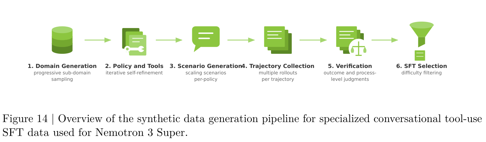
（接原文第 23 页。）
各方言的语法验证器及五个 LLM-as-a-critic 评判器，从更大数据集中验证并过滤得到。
对话式工具使用。许多模型采用大规模专门工具使用训练数据来增强 agent 能力（Liu et al., 2024；DeepSeek-AI, 2025a；Team, 2025；GLM-4.5-Team, 2025）。对于 Nemotron 3 Super，我们通过完全合成的六阶段生成流程扩大对话式工具使用数据：
流程的可视化见图 14。我们在上述流程的不同部分使用 Qwen3-235B-A22B-Thinking-2507、Qwen3-32B、Qwen3-235B-A22B-Instruct-2507（Yang et al., 2025）、deepseek-r1-0528（DeepSeek-AI, 2025b）、DeepSeek-V3.2（DeepSeek-AI, 2025a）和 gpt-oss-120b（OpenAI, 2025），获得覆盖 838 个领域的 279,116 次对话。相比 Nemotron 3 Nano 使用的、覆盖 5 个领域的 15,588 次对话，这是一项显著的规模扩展。
通用工具使用。更广泛的通用工具调用合成数据流程，首先从 ToolEyes（Ye et al., 2025）、API-Bank（Li et al., 2023b）、UltraTools（Huang et al., 2024）、AutoTools（Shi et al., 2025）、xLAM（Zhang et al., 2024）、Glaive-Function-Calling-v2（Glaive AI, 2025）、Toucan-1.5M（Xu et al., 2025），以及自定义工具构建多样工具集，作为后续合成任务生成的基础。基于一个或多个工具集模拟工具调用轨迹。轨迹模拟涉及由 LLM 扮演三个角色：用户（User-LLM）、助手（Assistant-LLM）和工具环境（Tool-LLM）。User-LLM 的种子包括选定工具集、从 Nemotron-Personas-USA（Meyer & Corneil, 2025）采样的人物设定，以及工具调用情境（单轮、多轮或多步）。User-LLM 先按照情境设计一个与选定人物设定相关、且可由选定工具集解决的任务。Assistant-LLM 通过产生工具调用并响应执行结果，尝试在一轮或多轮中解决该任务。Tool-LLM 负责产生模拟工具执行结果，
（本句接原文第 25 页。）
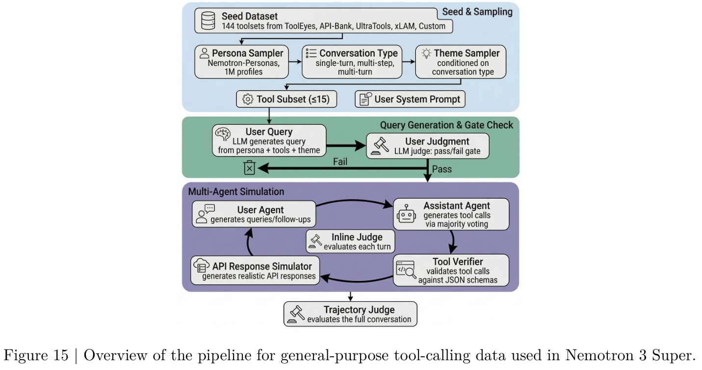
（接原文第 24 页。）
依据 Assistant-LLM 生成的工具调用及被调用工具。Tool-LLM 的提示包含帮助识别工具调用语法和语义错误的评分准则，以及原始用户查询，使调用成功时的工具结果符合上下文。为确保准确性，我们采用与专门工具调用数据生成类似的轮次级和轨迹级评判器。轮次级评判还与基于规则的验证结合，确保工具调用正确。我们使用 DeepSeek-v3.2（DeepSeek-AI et al., 2025）及 GLM-4.7（Z.ai / zai-org, 2025）扩展该流程，创建含 1.5M 条多样工具调用轨迹的数据集。
整体通用工具调用合成数据流程如图 15 所示。
第一阶段的总体 SFT 数据混合见图 16（所有未列出的数据集各自占混合比例不足 1%）。我们训练超过 7M 个样本。第二阶段使用第一阶段混合的 85%，并以 256K 和 512K-token 长上下文数据扩充。相比 Nemotron 3 Nano，我们显著增加 agent 任务的数量与多样性，并为其分配大得多的混合比例。
Nemotron 3 Super 针对三种推理模式训练：关闭推理、常规推理和低思考量推理。低思考量模式是新加入的。常规与低思考量模式可以选择与推理时预算控制（NVIDIA, 2025b）共同使用。这些控制组合提供灵活性，覆盖准确率—效率权衡的整个范围，满足客户在各种应用场景中的需求。
低思考量模式在 SFT 阶段引入，加入 GPT-OSS-120B 在自身低思考量模式下生成的训练样本（Du et al., 2025）。这些低思考量样本覆盖数学推理、STEM 问答和指令遵循任务，按样本数占整体 SFT 数据的 2%。随后，该模式在下一节讨论的 RL 阶段进一步优化。
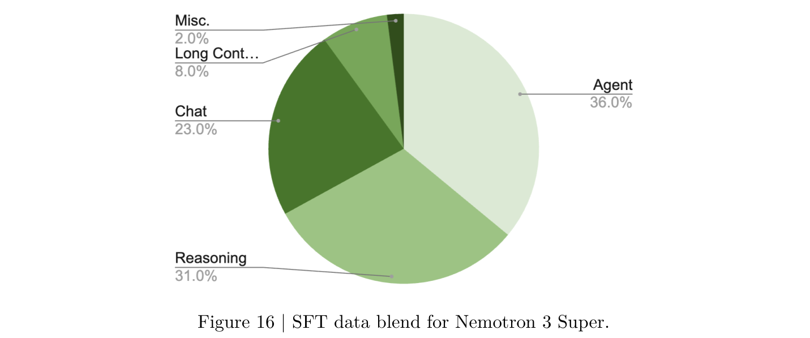
关闭推理模式和推理时预算控制的 SFT 方案与 NVIDIA（2025a）相似，但有少量差异。我们从随机 3% 的样本中删除推理轨迹，以训练关闭推理模式。主要 SFT 阶段之后，我们增加一个短暂的 350 步半 on-policy SFT 阶段，用于推理时预算控制：从模型收集 rollout，并将 12% 的推理轨迹截断到随机推理预算。
Nemotron 3 Super 后训练的 RL 阶段包含三个阶段，之后是一个 MTP 恢复阶段，如图 12 所示：
下面介绍这些阶段，包括训练算法、数据和系统设置。
我们采用与 Nemotron 3 Nano 类似的统一 RLVR 策略，但显著扩大环境数量。我们发现，同时在全部环境上训练会产生稳定增益，
（本句接原文第 27 页。）
（接原文第 26 页。）
而单环境训练会导致其他基准严重退化。
我们的 RLVR 设置包含 21 个环境，覆盖数学、代码、STEM、安全、聊天、指令遵循、长上下文能力、谜题和各类 agent 任务等多样领域。对于数据混合与课程，我们采用类似 Nemotron 3 Nano 的方法：滤除 SFT 模型始终能正确回答的提示，再通过基于难度的课程排列剩余样本。此方法的更多细节见 Nemotron 3 Nano。
低思考量推理。在多环境 RL 阶段，我们将部分提示转为低思考量模式。对每个低思考量提示，rollout 奖励由正确性和生成 token 数共同调整。低思考量提示混合最初包含数学、STEM 问答和竞赛代码提示的子集，总计占全部 RL 提示的 2%；之后缩减为数学与 STEM 问答子集，仅占 RL 提示的 1%。对于数学和 STEM 问答，我们随机采样子集。对于竞赛代码，我们使用一组未纳入 SFT 数据的编码问题，并只从这组保留题目中采样低思考量编码提示。实证结果表明，这种数据策略提供了充分泛化，在多环境 RL 过程中，低思考量模式在广泛基准上都得到改善。
相比 Nemotron 3 Nano，我们显著扩大 RL 数据。下面介绍多环境 RL 使用的数据集。大多数 RL 训练环境已在 NeMo Gym（NVIDIA, 2025a）开源。总体上，我们在 21 个环境和 37 个不同 RL 数据集上训练。
在 SWE-RL 阶段，我们提升模型在多种框架下自主解决 GitHub issue 的能力。每次 rollout 启动包含目标仓库的 Apptainer 容器，运行 OpenHands Agent Loop 产生代码补丁，再用真实测试评估以获得二元奖励。为实现工具多样性，我们在 OpenHands 中实现了 OpenCode 和 Codex agent 类，匹配 Claude Code 与 Codex CLI 的工具格式，在复用同一框架的同时改变训练时的工具与提示。这种多框架训练改善了推理时模型对所有目标框架的泛化和表现。
我们采用与 Nemotron 3 Nano 类似的 RLHF 方法，训练大型 GenRM 模型，在 RL 期间提供监督。我们不使用普通 GenRM，而是按照 Wang et al.（2025b）训练遵循原则的 GenRM。这些原则使我们能够在身份和安全相关话题等重要领域指导 Nemotron 3 Super 的行为。与 Nemotron 3 Nano 类似，我们使用 Qwen3-235B-A22B-Thinking-2507 作为 GenRM 训练的初始化。
训练 GenRM 使用 Helpsteer 3（Wang et al., 2025c）、lmarena-140k（Chiang et al., 2024）中适合商业用途的子集，以及一些近期收集的人类偏好数据。与 Nemotron 3 Nano 不同，我们在整个多环境 RL 阶段都使用 GenRM 训练，并在后训练末尾执行单独的仅 RLHF 阶段。
我们采用异步 GRPO 设置，在不同 GPU 设备间解耦训练与推理。推理 worker 持续生成轨迹，并存入 rollout 缓冲区。收集足够轨迹形成 batch 后，将 batch 发送到训练引擎进行模型更新。新模型版本可用后，立即把更新权重推送至推理 worker。因为权重更新可能发生在 rollout 中途，单条轨迹可能包含不同模型版本生成的 token。在推理 worker 上更新模型权重后，我们不会重新计算 KV cache。为避免可能导致准确率下降的过大策略滞后，我们限制推理 worker 最多落后最新模型版本一步。
为稳定训练并尽量减少训练—推理不匹配与策略滞后导致的 off-policy 影响，我们对由训练及推理 logprob 计算的重要性采样比进行掩蔽（Shao et al., 2024；Team et al., 2025；Yao et al., 2025）。
多环境 RLVR 每步采样 256 个提示，每提示生成 16 个答复。训练 batch 大小为 4096，即每次 rollout 对应一次 gradient 更新。最初的最大生成长度为 49K token，之后增加至 64K。
Agent RL——PivotRL：针对长时程 agent 能力的后训练，在效率与准确率之间存在张力。长时程指的是需要与环境进行多轮交互的任务，例如对话式工具使用、代码编辑、终端交互和网页搜索。SFT 对此成本低且简单，但经常使目标领域之外（OOD）的表现下降。端到端 RL 很大程度上避免这种结果，但成本高，因为每次更新都要求在复杂环境中进行在线交互 rollout。为解决这一问题，我们在 Super 后训练期间采用 PivotRL（Yi et al., 2026）。
PivotRL 是助手轮次级 RL 方法，通过在 RL 中复用离线 SFT 专家轨迹来解决这一权衡。它将训练聚焦在这些
（本句接原文第 29 页。）
（接原文第 28 页。）
SFT 轨迹中富含信息的轮次（称为“枢轴”）上，这些位置的策略对下一动作存在不确定性；它使用适合该领域的奖励，将策略动作与专家动作匹配，使模型因相似动作而非必须完全相同的专家动作获得奖励。我们发现，该方法大幅提升 agent RL 效率，同时避免 SFT 的 OOD 退化问题。
我们将 PivotRL 应用于所有 agent 领域，包括 agent 编程、搜索、终端使用和对话式工具使用。我们将很快提供包含更多细节的论文。
当前，模型后训练前沿的 RL 以扩展任务或环境多样性为特点，旨在让模型学习越来越通用的能力。将 RL 扩展到大量环境，需要高性能、可扩展且标准化的接口来协调 rollout 与训练。为用统一标准框架解决扩展性能和可扩展性挑战，我们采用 NeMo Gym（NVIDIA, 2025a）和 NeMo RL（NVIDIA, 2025b），在许多不同环境/验证器上实现大规模 RL。
NeMo Gym 基于服务器抽象。Gym 中有三种核心服务器：（1）agent、（2）模型、（3）资源。Agent 服务器实现 RL 环境的 rollout 内核。模型服务器封装 vLLM（Kwon et al., 2023）等推理引擎，提供提示—答复 API，并仔细保留 RL 所需的 token、推理对数概率数据及元数据。资源服务器提供验证 API，根据给定 rollout 计算奖励。
我们所有 Nemotron Super 3 RLVR 实验都基于 NeMo RL 与 NeMo Gym 集成基础设施：NeMo RL 充当 RL 训练循环控制器，使用 Megatron-Core（Shoeybi et al., 2020）进行大规模模型训练，并将所有 rollout 路由至 NeMo Gym 与 vLLM。
NeMo RL 和 NeMo Gym 使用 ray 编排并管理资源，将 ray 集群部署在 SLURM 上。Megatron 训练 worker、vLLM 生成 worker、Gym 环境与评判模型都调度到同一个 ray 集群。
异步 RL 基础设施：所有 RL 阶段采用异步 RL，生成可以独立于训练发生，通过权衡 rollout 的 on-policy 程度提升训练效率。训练采用一步 off-policy，每个训练步骤都预先对应一个未来训练步骤，因此没有浪费 rollout。训练与生成并不共置，这简化部署，避免对异步训练和生成 worker 进行复杂内存管理编排。
所有异步 RL 运行还使用进行中的权重更新（Piché et al., 2025），使训练无需等待剩余正在执行的 rollout 结束，就可更新生成 worker 的权重。因此，单次 rollout 可以含不同新旧策略的 token 与对数概率。启用进行中的权重更新，对加速异步 RL 训练至关重要。此类更新后，我们不重新计算 KV cache。
韧性：扩展至 1k GPU 后，我们遇到一些在较小任务规模中未观察到的间歇性故障。这些问题分为两类：（1）硬件相关；（2）软件相关。
我们观察到几种需要完整重启任务的硬件问题，因此也进行了多项启动时间优化：（1）并行化所有初始化；（2）预取所有虚拟环境及二进制文件；（3）利用 vLLM、flashinfer 等上游仓库的缓存。
并行初始化加剧了后训练
（本句接原文第 30 页。）
（接原文第 29 页。）
软件栈中潜在的端口绑定竞态，成为重要故障点。多个后训练软件组件需要端口：（1）Ray 控制平面；（2）vLLM worker 与 OpenAI 服务器；（3）TCP rendezvous；（4）NeMo Gym 服务器。节点上大量进程需要端口，使我们在 1K GPU 规模上频繁遇到端口冲突，全部属于检查时到使用时（TOCTOU）竞态。观察到的模式是，组件检查端口可用性却没有独占占用；待它自身或它通知的另一个进程尝试绑定时，其他进程已占用该端口。
SWE-RL 基础设施：软件工程任务训练需要 gym 环境，能够并发执行数百个 agent—代码库交互，每个交互都位于隔离沙箱，并返回由真实测试执行得到的奖励信号。在 NeMo Gym 的 SWE-RL 环境中，每次 rollout 启动包含目标仓库的 Apptainer 容器，运行 OpenHands Agent Loop 产生代码补丁，再运行真实测试计算二元奖励。Rollout 使用 Ray 的 SPREAD 调度策略分布到各节点。下面介绍此环境的关键组件。
我们使用与 Nemotron 3 Nano（NVIDIA, 2025a）相同的广泛基准集和评估栈评估 Nemotron 3 Super，覆盖通用知识、推理、agent、指令遵循、长上下文和多语言能力。所有评估结果均通过 NeMo Evaluator
（本句接原文第 32 页；第 31 页为表 5。）
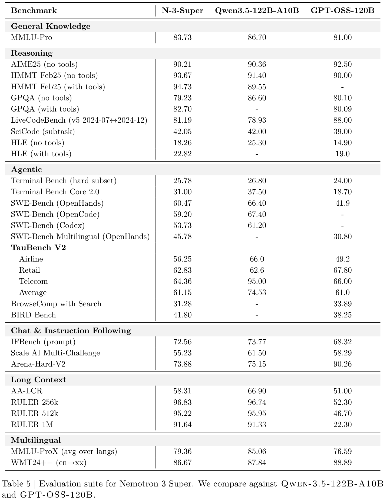
（接原文第 30 页。）
\(SDK^{9}\) 收集，多数基准使用 NeMo Skills Harness10。为便于复现，评估使用的、经 NVIDIA NeMo Evaluator SDK 打包的开源 NeMo Skills 容器见此链接11。除 NeMo Skills 外，评估还使用专门打包的开源容器，评估 Tau-2 Bench（默认提示）、Terminal Bench Hard（48 个任务）、ScaleAI Multi Challenge 多轮指令遵循和 Ruler。评估设置的更多细节见 NeMo Evaluator SDK 配置文件夹12。以下基准尚未接入我们的开源工具；对它们，我们使用官方开源实现，或计划未来开源的内部支架：SWE Bench Verified（OpenHands）、SWE Bench Multilingual（OpenHands）、带搜索的 BrowseComp（内部实现，使用 Serp API）、Terminal Bench Core 2.0（Harbor）。
推理能力。我们报告 AIME 25、HMMT Feb 25、GPQA（Rein et al., 2023）、LiveCodeBench v5（Jain et al., 2024）、SciCode（Tian et al., 2024）和 HLE（Phan et al., 2025）的结果。所有这些基准上，Nemotron 3 Super 均与 GPT-OSS-120B 有竞争力，但略落后于 Qwen-3.5-122B。
Agent 能力。我们报告 TerminalBench（困难子集及 v2 集）、SWE-Bench（OpenHands、OpenCode、Codex 与多语言集合；Jimenez et al., 2023）、TauBench V2（Airline、Retail、Telecom 及平均值；Barres et al., 2025），以及 BrowseComp（Wei et al., 2025）的结果。BrowseComp 框架强烈借鉴随 GPT OSS 发布的浏览器工具（OpenAI, 2025），评估不使用任何上下文管理策略。SQL 使用 BIRD 基准 Li et al.（2023a）开发集（1,534 个样本、SQLite、执行准确率）。所有 agent 基准上，Nemotron 3 Super 优于 GPT-OSS 120B 或与之有竞争力，并在某些框架上与 Qwen 3.5 122B 有竞争力。
聊天与指令遵循能力。我们报告 IFBench、Multi-Challenge、Arena-Hard V2（Li et al., 2024）的结果。在所有这些基准上，Nemotron 3 Super 都与基线模型有竞争力。
长上下文能力。我们报告每任务 100 个样本的 Ruler（Hsieh et al., 2024）及 AALCR 结果。
多语言能力。使用 MMLU-ProX（Xuan et al., 2025）和 \(WMT24++ en\to xx\)（Deutsch et al., 2025）衡量多语言能力。Nemotron 3 Super 在这两个基准上匹敌或优于基线模型。
与 GPT-OSS-120B 和 Qwen-3.5-122B-A10B 比较时，若有官方报告数据就使用；若没有，则遵循 Nemotron 3 Nano 报告（NVIDIA, 2025a）的流程，从可信公开汇总来源获取与官方协议一致的值，或使用官方评估设置自行计算分数。
9 https://github.com/NVIDIA-NeMo/Evaluator
10 https://github.com/NVIDIA-NeMo/Skills
11 NeMo Skills 容器
12 Nemotron 3 Super 评估配置
我们使用 Model-Optimizer13 应用 PTQ，量化权重和激活，生成两个高效部署 checkpoint：用于 Hopper 的 FP8（W8A8），以及用于 Blackwell 的 NVFP4（W4A4）。
FP8 PTQ 校准使用来自后训练 SFT 数据集的一个小子集，包含 256 个样本，上下文长度 65536。FP8 量化涵盖路由与共享 MoE GEMM，以及 Mamba 线性层。我们还将 KV cache 保持为 FP8，而 Mamba 状态缓存量化为 FP16 以加速。该 checkpoint 各算子的精度分配概括于表 6。
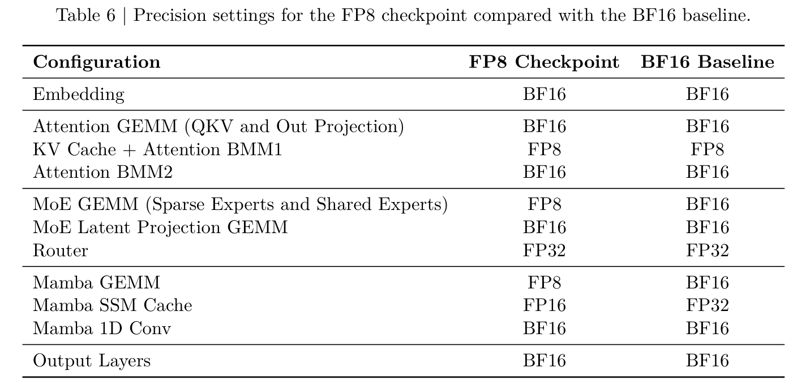
FP4 是比 FP8 更激进的量化格式，对 prefill 密集的推理工作负载特别有吸引力，例如编码 agent 部署，其中线性和 MoE GEMM 是主要性能瓶颈。NVFP4 在 Blackwell GPU 上获得原生加速，比 MXFP4 等其他 FP4 格式有更高准确率（NVIDIA, 2025）。用于推理的 NVFP4（NVIDIA, 2025）使用带符号 E2M1 值，沿最后一维以大小为 16 的一维块进行逐块缩放。这些块级缩放再使用逐张量静态校准的 FP32 缩放因子量化为 FP8 E4M3。
基线 NVFP4 PTQ 方案（NVIDIA, 2025）中，每块缩放由块内最大绝对值确定。我们评估了多种其他 PTQ 方法，实验结果见附录 B.1。最佳总体结果由混合 FP4 方案获得：权重块级缩放通过最小化权重 MSE 选择，激活块级缩放仍基于最大值。这一选择既有效也实用。权重量化离线校准，因此可进行昂贵的缩放搜索而不影响运行时性能。激活量化必须在
（本句接原文第 34 页。）
（接原文第 33 页。）
运行时高效计算，因此缩放搜索算法不切实际。激活的基于最大值缩放，在运行时性能与量化准确率之间提供良好权衡。
此外，我们选择性地将部分层从 FP4（W4A4）提升至 FP8（W8A8）或 BF16（W16A16），进一步提高准确率。我们使用 Model-Optimizer AutoQuantize14，这是一种受神经架构搜索（NAS）启发、用于推导最佳混合精度分配的方法。AutoQuantize 估计逐算子敏感度，建模可用量化选项的性能成本，并用类似背包优化的过程求出最佳逐层分配。其敏感度指标遵循受 Optimal Brain Surgeon（Hassibi et al., 1993）启发、在 LLM-MQ（Li et al., 2023c）中引入的二阶 Taylor 近似。AutoQuantize 将 LLM-MQ 推广到仅权重量化之外，支持算子级量化，包括 GEMM 的权重—激活联合量化，并考虑算子融合等推理部署约束。详细算法见 B.2。
总体上，最终 NVFP4 PTQ 方案结合：
该组合解决朴素 NVFP4 PTQ 的准确率损失，同时保持部署所需的运行时效率。最终 NVFP4 checkpoint 的逐算子精度分配概括于表 7。
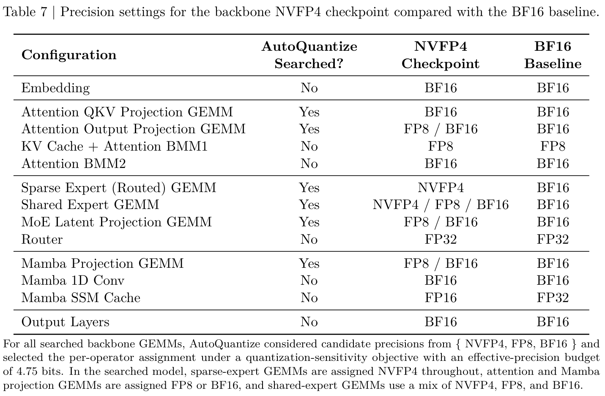
将 AutoQuantize 与改进后的 NVFP4 PTQ 方案结合，得到一个主要采用 FP4 的模型，仅少部分层为保持准确率而保留 FP8 或 BF16。完整
（本句接原文第 35 页。）
14 https://github.com/NVIDIA/Model-Optimizer/tree/main/examples/llm_ptq
（接原文第 34 页。）
混合精度 PTQ 流程在一个含 8 GPU 的 B200 节点上，不到 2 小时即可完成；使用 Nemotron 3 Super SFT 数据集的 512 个样本，序列长度 4096。所得模型相对 BF16 基线的准确率中位数为 99.8%，同时保持接近 FP4 的性能。最终评估结果见表 8。
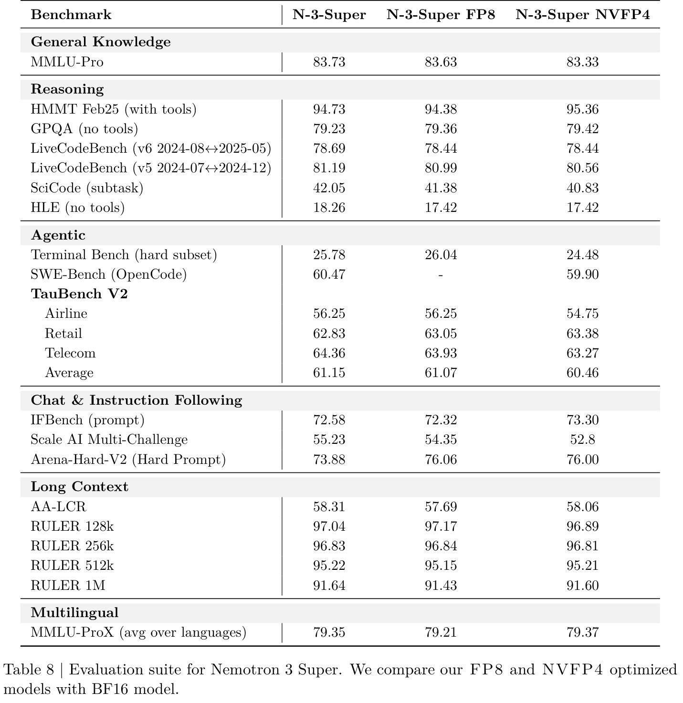
在受内存限制的设置中，从 DRAM 读取 Mamba 状态缓存（SSM 缓存）成为 decoding 速度的重要瓶颈。SSM 缓存默认以 FP32 存储。一种选择是以 FP16 存储 SSM 缓存，而运算使用 FP32。此时，从内存取出 FP16 缓存，提升至 FP32 进行递归更新，再转回 FP16 存储。表 9 展示在 Nemotron 3 Super 早期 checkpoint 上的实验。结果表明，
（本句接原文第 36 页。）
（接原文第 35 页。）
结合 W8A8 量化时，将 SSM 缓存直接转换为 FP16，可能使输出冗长程度最多增加 40%。即使权重和激活保持 BF16，将 SSM 缓存转换为 FP16 也会使输出冗长程度最多增加 37%。
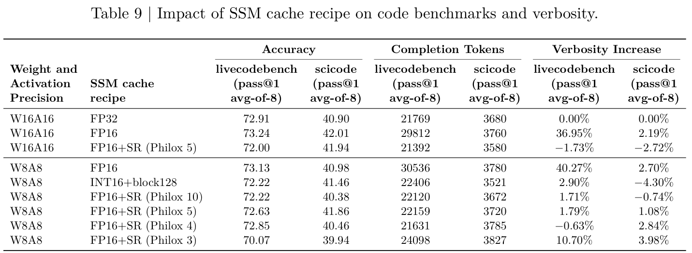
Mamba 缓存量化的关键挑战，是量化误差不会局限于单个步骤。Mamba decoding 具有递归性，因此先前步骤的量化误差传播到未来步骤，并随时间累积。展开递归更新即可看出这种积累。令递归状态更新为 \(h_{t} = A_{t}h_{t-1} + B_{t}x_{t}\)，令步骤 \(t\) 的缓存量化引入加性误差 \(e_{t}\)，从而 \(h_{q,t} = A_{t}h_{q,t-1} + B_{t}x_{t} + e_{t}\)。展开此递归得到：
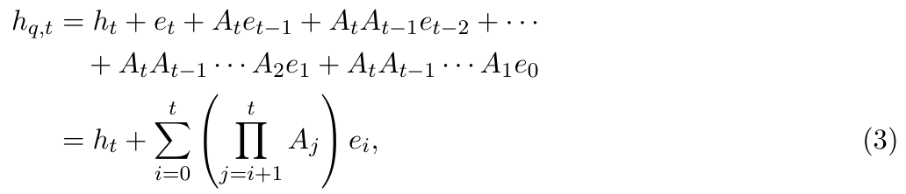
这表明早期步骤的量化误差通过后续递归状态转移传播，并可能随 decoding 时间累积。
通过改变训练（例如 QAT 或 QAD）处理这些量化误差并不简单。Mamba 训练使用分块 State Space Duality 算法，不显式物化递归关系及推理时缓存。训练期间准确建模递归 decoding 缓存行为会引入大量开销。因此，我们重点研究无需训练即可恢复缓存量化损失准确率的方法。
PTQ 中减少量化误差积累的一种方法，是增加尾数精度。我们通过用 INT16 替代 FP16 存储 SSM 缓存进行探索。朴素 INT16 量化未改善冗长程度，因为张量级分析显示 SSM 缓存具有宽动态范围。随后，我们沿状态维度对大小为 128 的块引入 FP32 块级缩放，以增加有效动态范围。这消除了冗长问题（表 9）。
我们还探索一种假设：误差积累与 FP32 转为 FP16 时的舍入有关。关键在于，最接近舍入、平局取偶数（RTNE）在量化中引入偏差。RTNE 将给定输入映射为相同舍入值，因此其量化误差方差为零，但相对原始值的偏差非零。相比之下，随机舍入（SR）在期望上无偏。在递归设置中，RTNE 的偏差随时间一致累积，而随机舍入将这种系统性漂移替换为
（本句接原文第 37 页。）
（接原文第 36 页。）
零均值噪声。基于这一观察，我们在将缓存转为 FP16 前应用随机舍入，解决了 BF16 基线与 FP8 checkpoint 的冗长问题（表 9）。
表 9 展示不同 SSM 缓存方案在 livecodebench 和 scicode 上的准确率及冗长程度。带块级缩放的 INT16 和带随机舍入的 FP16，都能够保持与 FP32 基线相近的准确率与冗长程度。我们选择采用 Philox<5> 伪随机数生成的 FP16 随机舍入（SR），作为 Nemotron 3 Super 的 SSM 缓存方案，原因有三：
为进一步提高效率，表 9 还改变 Philox 轮数。增加轮数提高生成值的统计质量，减少轮数降低伪随机数生成开销。选择 Philox<5>，是在保持准确率和冗长程度的同时，最小化伪随机数生成开销。
我们介绍 Nemotron 3 Super，一个具有强大 agent 能力、激活 12B 参数、总计 120B 参数的 MoE Mamba-Attention 混合模型。Nemotron 3 Super 采用 LatentMoE 提高准确率，并加入 MTP 层，通过 speculative decoding 加速推理。我们使用低精度 NVFP4，在 25 万亿文本 token 上预训练 Nemotron 3 Super，随后在多样 RL 环境上后训练。最后，我们将模型量化为 FP8 和 NVFP4，在不牺牲模型准确率的情况下显著提高推理吞吐量。Nemotron 3 Super 的吞吐量最高达到 GPT-OSS-120B 的 2.2 倍，同时在广泛任务上保持更高准确率。我们在 HuggingFace 发布 Nemotron 3 Super 的预训练、后训练及量化 checkpoint。
感谢以下人员对 NVIDIA Nemotron 3 Super 作出的宝贵贡献。
Aaron Blakeman, Aakshita Chandiramani, Abdullahi Olaoye, Abhilash Somasamudramath, Abhibha Gupta, Abhinav Khattar, Adeola Adesoba, Adi Renduchintala, Adil Asif, Aditya Agrawal Lilach Ilan, Aditya Vavre, Ahmad Kiswani, Aishwarya Padmakumar, Ajay Hotchandani, Akanksha Shukla, Akhiad Bercovich, Aleksander Ficek, Aleksandr Shaposhnikov, Alex Gronskiy, Alex Kondratenko, Alex Neefus, Alex Steiner, Alex Yang, Alexander Bukharin, Alexander Young, Ali Hatamizadeh, Ali Taghibakhshi, Alina Galiautdinova, Alisa Liu, Alok Kumar, Ameya Sunil Mahabaleshwarkar, Amir Klein, Amit Zuker, Amnon Geifman, Anahita Bhiwandiwalla, Ananth Subramaniam, Andrew Tao, Anjaney Shrivastava, Anjulie Agrusa, Ankur Srivastava, Ankur Verma, Ann Guan, Anna Shors, Annamalai Chockalingam, Anubhav Mandarwal, Aparnaa Ramani, Arham Mehta, Arti Jain, Arun Venkatesan, Asha Anoosheh, Ashwath Aithal, Ashwin Poojary, Asif Ahamed, Asit Mishra, Asli Sabanci Demiroz, Asma Kuriparambil Thekkumpate, Atefeh Sorabizadeh, Avinash Kaur, Ayush Dattagupta, Barath Subramaniam Anandan, Bardiya Sadeghi, Barnaby Simkin, Ben Lanir, Benedikt Schifferer, Benjamin Chislett, Besmira Nushi, Bilal Kartal, Bill Thiede, Bita Darvish Rouhani, Bobby Chen, Boris Ginsburg, Brandon Norick, Branislav Kisacanin, Brian Yu, Bryan Catanzaro, Buvaneswari Mani, Carlo del Mundo, Chanran Kim, Chantal Hwang, Chankyu Lee,
（贡献者名单接续。）
Chao Ni, Charles Wang, Charlie Truong, Chenhan Yu, Chenjie Luo, Cherie Wang, Cheng-Ping Hsieh, Chetan Mungekar, Chintan Patel, Chris Alexiuk, Chris Holguin, Chris Wing, Christian Munley, Christopher Parisien, Chunyang Sheng, Chuck Desai, Collin Neale, Cyril Meurillon, Dakshi Kumar, Dan Gil, Dan Su, Dane Corneil, Daniel Afrimi, Daniel Burkhardt Eliuth Triana, Daniel Egert, Daniel Fatade Douglas O’Flaherty, Daniel Lo, Daniel Rohrer, Daniel Serebrenik, Daniil Sorokin, Daria Gitman, Daria Levy, Darko Stosic, David Edelsohn, David Messina, David Mosallanezhad, David Tamok, Deena Donia, Deepak Narayanan, Devin O’Kelly, Dheeraj Peri, Dhruv Nathawani, Di Wu, Dima Rekesh, Dina Yared, Divyanshu Kakwani, Dmitry Konyagin Brandon Tuttle, Dong Ahn, Dongfu Jiang, Dorrin Poorkay, Duncan Riach, Dusan Stosic, Dustin Van Stee, Edgar Minasyan, Edward Lin, Eileen Peters Long, Elad Segal, Elena Lewis, Elena Lantz, Ellie Evans, Elliott Ning, Eric Chung, Eric Harper, Eric Pham-Hung, Eric W. Tramel, Erick Galinkin, Erik Pounds, Esti Etrog, Evan Briones, Evan Wu, Evelina Bakhturina, Evgeny Tsykunov, Ewa Dobrowolska, Farshad Saberi Movahed, Farzan Memarian, Fay Wang, Fei Jia, Felipe Soares, Felipe Vieira Frujeri, Feng Chen, Fengguang Lin, Ferenc Galko, Fortuna Zhang, Frankie Siino, Frida Hou, Gantavya Bhatt, Gargi Prasad, Geethapriya Venkataramani, Geetika Gupta, George Armstrong, Gerald Shen, Giulio Borghesi, Gordana Neskovic, Gorkem Batmaz, Grace Lam, Grace Wu, Greg Pauloski, Greyson Davis, Grigor Nalbandyan, Guoming Zhang, Guy Farber, Guyue Huang, Haifeng Qian, Haran Kumar Shiv Kumar, Harry Kim, Harsh Sharma, Hayate Iso, Hayley Ross, Herbert Hum, Herman Sahota, Hexin Wang, Himanshu Soni, Hiren Upadhyay, Huy Nguyen, Iain Cunningham, Ido Galil, Ido Shahaf, Igor Gitman, Igor Shovkun, Igino Padovani, Ikroop Dhillon, Ilya Loshchilov, Ingrid Kelly, Itamar Schen, Itay Levy, Ivan Moshkov, Izik Golan, Izzy Putterman, Jain Tu, Jan Baczek, Jan Kautz, Janica Rosenberg, Jane Polak Scowcroft, Jared Casper, Jarrod Pflum, Jason Grant, Jason Sewall, Jatin Mitra, Jeffrey Glick, Jiacheng Xu, Jian Zhang, Jenny Chen, Jesse Oliver, Jiafan Zhu, Jialin Song, Jiaqi Zeng, Jie Lou, Jill Milton, Jimmy Zhang, Jim Chow, Jinhang Choi, Jining Huang, Jocelyn Huang, Joel Caruso, Joey Conway, Joey Guman, Johan Jatko, John Kamalu, Johnny Greco, Jonathan Cohen, Jonathan Raiman, Joseph Jennings, Joyjit Daw, Juan Yu, Julio Tapia, Junkeun Yi, Jupinder Parmar, Jyothi Achar, Kari Briski, Kartik Mattoo, Katherine Cheung, Katherine Luna, Keith Wyss, Kevin Shih, Kezhi Kong, Khanh Nguyen, Khushi Bhardwaj, Kirill Buryak, Kirthi Shankar Sivamani, Konstantinos Krommydas, Kris Murphy, Krishna C. Puvvada, Krzysztof Pawelec, Kumar Anik, Laikh Tewari, Laya Sleiman, Leo Du, Leon Derczynski, Li Ding, Lingjie Wu, Lizzie Wei, Luis Vega, Lun Su, Maarten Van Segbroeck, Maer Rodrigues de Melo, Magaret Zhang, Mahan Fathi, Makesh Narsimhan Sreedhar, Makesh Sreedhar, Makesh Tarun Chandran, Manuel Reyes Gomez, Maor Ashkenazi, Marc Cuevas, Marc Romeijn, Margaret Zhang, Mark Cai, Mark Gabel, Markus Kliegl, Martyna Patelka, Maryam Moosaei, Matvei Novikov, Matthew Varacalli, Mauricio Ferrato, Mehrzad Samadi, Melissa Corpuz, Meng Xin, Mengdi Wang, Mengru Wang, Meredith Price, Michael Andersch, Michael Boone, Michael Evans, Michael Z Wang, Micah Schaffer, Miguel Martinez, Mikail Khona, Mike Chrzanowski, Mike Hollinger, Mingyuan Ma, Minseok Lee, Mohammad Dabbah, Mohammad Shoeybi, Mostofa Patwary, Nancy Agarwal, Nader Khalil, Nanthini Balasubramaniam, Narsi Kodukula, Nabin Mulepati, Najeeb Nabwani, Narimane Hennouni, Natalie Hereth, Nathaniel Pinckney, Nave Assaf, Negar Habibi, Nestor Qin, Netanel Haber, Neta Zmora, Nick Reamaroon, Nickson Quak, Nidhi Bhatia, Nikhil Jukar, Nikolai Ludwig, Nikki Pope, Nima Tajbakhsh, Nir Ailon, Nirmal Juluru, Nirmalya De, Nowel Pitt, Olivier Delalleau, Oleg Rybakov, Oleksii Hrinchuk, Oleksii Kuchaiev, Oluwatobi Olabiyi, Omer Ullman Argov, Omri Almog, Omri Puny, Oren Tropp, Otavio Padovani, Ouye Xie, Parth Chadha, Pasha Shamis, Paul Gibbons, Pavlo Molchanov, Peter Belcak, Peter Jin, Pinky Xu, Piotr Januszewski, Pooya Jannaty, Prachi Shevate, Pradeep Thalasta, Pranav Prashant Thombre, Prasoon Varshney, Prerana Gambhir, Pritam Gundecha, Przemek Tredak, Qing Miao, Qiyu Wan, Quan Tran Minh, Rabeeh Karimi Mahabadi, Rachel Oberman, Rachit Garg, Rahul Kandu, Raina Zhong, Ran El-Yaniv, Ran Zilberstein, Rasoul Shafipour, Renjie Pi, Renee Yao, Richard Mazzarese, Richard Wang, Rick Izzo, Ridhima Singla, Rima Shahbazyan, Rishabh
（贡献者名单接续。）
Garg, Ritika Borkar, Ritu Gala, Riyad Islam, Robert Clark, Robert Hesse, Roger Waleffe, Rohit Varma Kalidindi, Rohit Watve, Roi Koren, Ron Fan, Ruchika Kharwar, Ruisi Cai, Ruoxi Zhang, Russell J. Hewett, Ryan Prenger, Ryan Timbrook, Ryota Egashira, Sadegh Mahdavi, Sagar Singh Ashutosh Joshi, Sahil Modi, Samuel Kriman, Sandeep Pombra, Sanjeev Satheesh, Sanjay Kariyappa, Santiago Pombo, Saori Kaji, Satish Pasumarthi, Saurav Mishra, Saurav Muralidharan, Scott Hara, Sean Narenthiran, Sebastian Rogawski, Seonjin Na, Seonmyeong Bak, Sepehr Sameni, Seth Poulos, Shahar Mor, Shantanu Acharya, Shaona Ghosh Adam Lord, Sharath Turuvekere Sreenivas, Shaun Kotek, Shaya Gharghabi, Shelby Thomas, Sheng-Chieh Lin, Shibani Likhite, Shiqing Fan, Shiyang Chen, Shreya Gopal, Shrimai Prabhumoye, Shubham Pachori, Shubham Toshniwal, Shuo Zhang, Shuoyang Ding, Shyam Renjith, Shyamala Prayaga, Siddhartha Jain, Simeng Sun, Sirisha Rella, Sirshak Das, Smita Ithape, Sneha Harishchandra S, Somshubra Majumdar, Soumye Singhal, Sri Harsha Singudasu, Sriharsha Niverty, Stas Sergienko, Stefana Gloginic, Stefania Alborghetti, Stephen Ge, Stephen McCullough, Sugam Dipak Devare, Suguna Varshini Velury, Sukrit Rao, Sumeet Kumar Barua, Sunny Gai, Suseella Panguluri, Sushil Koundinyan, Swathi Patnam, Sweta Priyadarshi, Swetha Bhendigeri, Syeda Nahida Akter, Sylendran Arunagiri, Tailling Yuan, Talor Abramovich, Tan Bui, Tan Yu, Terry Kong, Thanh Do, Thomas Gburek, Thorgane Marques, Tiffany Moore, Tijmen Blankevoort, Tim Moon, Timothy Ma, Tiyasa Mitra, Tomasz Grzegorzek, Tomer Asida, Tomer Bar Natan, Tomer Keren, Tomer Ronen, Traian Rebedea, Trenton Starkey, Tugrul Konuk, Twinkle Vashishth, Tyler Condensa, Udi Karpas, Ushnish De, Vahid Noorozi, Vahid Noroozi, Vanshil Atul Shah, Veena Vaidyanathan, Venkat Srinivasan, Venmugil Elango, Victor Cui, Vijay Korthikanti, Vikas Mehta, Virginia Adams, Virginia Wu, Vitaly Kurin, Vitaly Lavrukhin, Vladimir Anisimov, Wan Seo, Wanli Jiang, Wasi Uddin Ahmad, Wei Du, Wei Ping, Wei-Ming Chen, Wendy Quan, Wenliang Dai, Wenwen Gao, Will Jennings, William Zhang, Xiaowei Ren, Xiaowen Xin, Xin Li, Yang Yu, Yangyi Chen, Yaniv Galron, Yashaswi Karnati, Yejin Choi, Yev Meyer, Yi-Fu Wu, Yian Zhang, Ying Lin, Yonatan Geifman, Yonggan Fu, Yoshi Suhara, Youngeun Kwon, Yuan Zhang, Yuki Huang, Zach Moshe, Zhiyu Cheng, Zhilin Wang, Zihan Liu, Zijia Chen, Zijie Yan, Zhongbo Zhu, Zhuolin Yang, Zuhair Ahmed.
Talor Abramovich, Maor Ashkenazi, Carl (Izzy) Putterman, Benjamin Chislett, Tiyasa Mitra, Bita Darvish Rouhani, Ran Zilberstein, and Yonatan Geifman. SPEED-Bench：统一且多样的 speculative decoding 基准, 2026. 链接：https://research.nvidia.com/publication/2026-02_speed-bench-unified-and-diverse-benchmark-speculative-decoding.
Syeda Nahida Akter, Shrimai Prabhumoye, John Kamalu, Sanjeev Satheesh, Eric Nyberg, Mostofa Patwary, Mohammad Shoeybi, and Bryan Catanzaro. MIND：用于 LLM 预训练的数学引导合成对话, 2024. 链接：https://arxiv.org/abs/2410.12881.
Syeda Nahida Akter, Shrimai Prabhumoye, Eric Nyberg, Mostofa Patwary, Mohammad Shoeybi, Yejin Choi, and Bryan Catanzaro. 前置推理：预训练与后训练数据之间的协同作用. In The Fourteenth International Conference on Learning Representations, 2026. 链接：https://openreview.net/forum?id=VmEkhV2yCX.
Jacob Austin, Augustus Odena, Maxwell Nye, Maarten Bosma, Henryk Michalewski, David Dohan, Ellen Jiang, Carrie Cai, Michael Terry, Quoc Le, and Charles Sutton. 使用 LLM 进行程序合成, 2021. 链接：https://arxiv.org/abs/2108.07732.
Ibragim Badertdinov, Alexander Golubev, Maksim Nekrashevich, Anton Shevtsov, Simon Karasik, Andrei Andriushchenko, Maria Trofimova, Daria Litvintseva, and Boris Yangel. SWE-rebench：用于软件工程 agent 任务收集与去污染评估的自动化流程, 2025. 链接：https://arxiv.org/abs/2505.20411.
Victor Barres, Honghua Dong, Soham Ray, Xujie Si, and Karthik Narasimhan. τ2-Bench：在双控制环境中评估对话式 agent. arXiv 预印本 arXiv:2506.07982, 2025.
Noga BenYoash, Menachem Brief, Oded Ovadia, Gil Shenderovitz, Moshik Mishaeli, Rachel Lemberg, and Eitam Sheetrit. SecQue：评估真实世界金融分析能力的基准. In Proceedings of the Fourth Workshop on Generation, Evaluation and Metrics (GEM2), pp. 212–230, 2025.
Yonatan Bisk, Rowan Zellers, Ronan Le Bras, Jianfeng Gao, and Yejin Choi. PIQA：用自然语言推理物理常识, 2019. 链接：https://arxiv.org/abs/1911.11641.
Patrick Chao, Alexander Robey, Edgar Dobriban, Hamed Hassani, George J. Pappas, and Eric Wong. 用二十次查询越狱黑盒 LLM, 2024. 链接：https://arxiv.org/abs/2310.08419.
Mark Chen, Jerry Tworek, Heewoo Jun, Qiming Yuan, Henrique Ponde de Oliveira Pinto, Jared Kaplan, et al. 评估以代码训练的 LLM, 2021. 链接：https://arxiv.org/abs/2107.03374.
Wei-Lin Chiang, Lianmin Zheng, Ying Sheng, Anastasios Nikolas Angelopoulos, Tianle Li, Dacheng Li, Hao Zhang, Banghua Zhu, Michael Jordan, Joseph E. Gonzalez, and Ion Stoica. Chatbot Arena：根据人类偏好评估 LLM 的开放平台, 2024.
Peter Clark, Isaac Cowhey, Oren Etzioni, Tushar Khot, Ashish Sabharwal, Carissa Schoenick, and Oyvind Tafjord. 认为已经解决问答了吗？试试 ARC，AI2 推理挑战. ArXiv, abs/1803.05457, 2018a.
（参考文献接续。）
Peter Clark, Isaac Cowhey, Oren Etzioni, Tushar Khot, Ashish Sabharwal, Carissa Schoenick, and Oyvind Tafjord. 认为已经解决问答了吗？试试 ARC，AI2 推理挑战. arXiv:1803.05457v1, 2018b.
Karl Cobbe, Vineet Kosaraju, Mohammad Bavarian, Mark Chen, Heewoo Jun, Lukasz Kaiser, Matthias Plappert, Jerry Tworek, Jacob Hilton, Reiichiro Nakano, Christopher Hesse, and John Schulman. 训练验证器以解决数学文字题, 2021. 链接：https://arxiv.org/abs/2110.14168.
Damai Dai, Chengqi Deng, Chenggang Zhao, RX Xu, Huazuo Gao, Deli Chen, Jiashi Li, Wangding Zeng, Xingkai Yu, Yu Wu, et al. DeepSeekMoE：迈向专家混合语言模型中的极致专家专业化. arXiv 预印本 arXiv:2401.06066, 2024.
Tri Dao and Albert Gu. Transformer 是 SSM：通过结构化状态空间对偶构建广义模型与高效算法, 2024. 链接：https://arxiv.org/abs/2405.21060.
DeepSeek-AI. DeepSeek-v3.2-exp：通过 DeepSeek Sparse Attention 提升长上下文效率, 2025a.
DeepSeek-AI. DeepSeek-R1：通过强化学习激发 LLM 的推理能力, 2025b. 链接：https://arxiv.org/abs/2501.12948.
DeepSeek-AI. DeepSeek-V3 技术报告, 2025c. 链接：https://arxiv.org/abs/2412.19437.
DeepSeek-AI, Aixin Liu, Aoxue Mei, Bangcai Lin, Bing Xue, Bingxuan Wang, et al. DeepSeek-v3.2：推进开放 LLM 的前沿. arXiv 预印本 arXiv:2512.02556, 2025. 链接：https://arxiv.org/abs/2512.02556. 具有稀疏 attention 与 agent 推理能力的先进 LLM。
Daniel Deutsch, Eleftheria Briakou, Isaac Rayburn Caswell, Mara Finkelstein, Rebecca Galor, Juraj Juraska, Geza Kovacs, Alison Lui, Ricardo Rei, Jason Riesa, et al. WMT24++：将 WMT24 的语言覆盖扩展到 55 种语言和方言. In Findings of the Association for Computational Linguistics: ACL 2025, pp. 12257–12284, 2025.
Wei Du, Shubham Toshniwal, Branislav Kisacanin, Sadegh Mahdavi, Ivan Moshkov, George Armstrong, Stephen Ge, Edgar Minasyan, Feng Chen, and Igor Gitman. Nemotron-math：通过多模式监督高效地进行数学推理长上下文蒸馏. arXiv 预印本 arXiv:2512.15489, 2025.
Venmugil Elango, Nidhi Bhatia, Roger Waleffe, Rasoul Shafipour, Tomer Asida, Abhinav Khattar, Nave Assaf, Maximilian Golub, Joey Guman, Tiyasa Mitra, Ritchie Zhao, Ritika Borkar, Ran Zilberstein, Mostofa Patwary, Mohammad Shoeybi, and Bita Rouhani. LatentMoE：迈向 MoE 模型最优的每 FLOP 和每参数准确率, 2026. 链接：https://arxiv.org/abs/2601.18089.
Steven Feng, Shrimai Prabhumoye, Kezhi Kong, Dan Su, Mostofa Patwary, Mohammad Shoeybi, and Bryan Catanzaro. 最大化数据潜力：通过两阶段预训练提高 LLM 准确率, 2024. 链接：https://arxiv.org/abs/2412.15285.
Elias Frantar, Saleh Ashkboos, Torsten Hoefler, and Dan Alistarh. GPTQ：生成式预训练 Transformer 的准确 PTQ. In International Conference on Learning Representations (ICLR), 2023. 最初发布为 arXiv:2210.17323.
（参考文献接续。）
Shaona Ghosh, Prasoon Varshney, Makesh Narsimhan Sreedhar, Aishwarya Padmakumar, Traian Rebedea, Jibin Rajan Varghese, and Christopher Parisien. AEGIS2.0：用于 LLM 安全护栏对齐的多样化 AI 安全数据集与风险分类体系. In Luis Chiruzzo, Alan Ritter, and Lu Wang (eds.), Proceedings of the 2025 Conference of the Nations of the Americas Chapter of the Association for Computational Linguistics: Human Language Technologies (Volume 1: Long Papers), pp. 5992–6026, Albuquerque, New Mexico, April 2025. Association for Computational Linguistics. ISBN 979-8-89176-189-6. doi: 10.18653/v1/2025.naacl-long.306. 链接：https://aclanthology.org/2025.naacl-long.306/.
Glaive AI. glaiveai/glaive-function-calling-v2. Hugging Face 数据集, 2025. 链接：https://huggingface.co/datasets/glaiveai/glaive-function-calling-v2. 包含多轮与多样领域场景、用于训练和评估函数调用能力的函数调用数据集。
GLM-4.5-Team. GLM-4.5：agent、推理和代码（ARC）基础模型, 2025. 链接：https://arxiv.org/abs/2508.06471.
Fabian Gloeckle, Badr Youbi Idrissi, Baptiste Roziere, David Lopez-Paz, and Gabriel Synnaeve. 通过 MTP 构建更好、更快的 LLM. In International Conference on Machine Learning, pp. 15706–15734. PMLR, 2024.
Gretel. Gretel 合成安全对齐数据集, 12 2024. 链接：https://huggingface.co/datasets/gretelai/gretel-safety-alignment-en-v1.
Alex Gu, Baptiste Rozière, Hugh Leather, Armando Solar-Lezama, Gabriel Synnaeve, and Sida I. Wang. CRUXEval：代码推理、理解和执行的基准, 2024. 链接：https://arxiv.org/abs/2401.03065.
Melody Y. Guan, Manas Joglekar, Eric Wallace, Saachi Jain, Boaz Barak, Alec Helyar, Rachel Dias, Andrea Vallone, Hongyu Ren, Jason Wei, Hyung Won Chung, Sam Toyer, Johannes Heidecke, Alex Beutel, and Amelia Glaese. 审慎对齐：推理使语言模型更安全, 2025. 链接：https://arxiv.org/abs/2412.16339.
Steve Harris and Andy Seaborne. SPARQL 1.1 查询语言. https://www.w3.org/TR/sparql11-query/, 2013. W3C 推荐标准.
Adib Hasan, Ileana Rugina, and Alex Wang. 通过剪枝实现保护：无需微调即可增强对齐 LLM 的抗越狱能力. arXiv 预印本 arXiv:2401.10862, 2024.
B. Hassibi, D.G. Stork, and G.J. Wolff. Optimal Brain Surgeon 与通用网络剪枝. In IEEE International Conference on Neural Networks, pp. 293–299 vol.1, 1993. doi: 10.1109/ICNN. 1993.298572.
Dan Hendrycks, Collin Burns, Steven Basart, Andy Zou, Mantas Mazeika, Dawn Song, and Jacob Steinhardt. 衡量大规模多任务语言理解, 2021a. 链接：https://arxiv.org/abs/2009.03300.
Dan Hendrycks, Collin Burns, Steven Basart, Andy Zou, Mantas Mazeika, Dawn Song, and Jacob Steinhardt. 衡量大规模多任务语言理解. Proceedings of the International Conference on Learning Representations (ICLR), 2021b.
Dan Hendrycks, Collin Burns, Saurav Kadavath, Akul Arora, Steven Basart, Eric Tang, Dawn Song, and Jacob Steinhardt. 使用 MATH 数据集衡量数学问题解决能力, 2021c. 链接：https://arxiv.org/abs/2103.03874.
（参考文献接续。）
Cheng-Ping Hsieh, Simeng Sun, Samuel Kriman, Shantanu Acharya, Dima Rekesh, Fei Jia, Yang Zhang, and Boris Ginsburg. RULER：长上下文语言模型的真实上下文长度是多少？ arXiv 预印本 arXiv:2404.06654, 2024.
Shengding Hu, Yuge Tu, Xu Han, Ganqu Cui, Chaoqun He, Weilin Zhao, Xiang Long, Zhi Zheng, Yewei Fang, Yuxiang Huang, Xinrong Zhang, Zhen Leng Thai, Chongyi Wang, Yuan Yao, Chenyang Zhao, Jie Zhou, Jie Cai, Zhongwu Zhai, Ning Ding, Chao Jia, Guoyang Zeng, dahai li, Zhiyuan Liu, and Maosong Sun. MiniCPM：通过可扩展训练策略揭示小语言模型的潜力. In First Conference on Language Modeling, 2024. 链接：https://openreview.net/forum?id=3X2L2TFr0f.
Shijue Huang, Wanjun Zhong, Jianqiao Lu, Qi Zhu, et al. 规划、创建、使用：评估 LLM 在真实复杂场景中的全面工具运用. arXiv 预印本 arXiv:2401.17167, 2024. 链接：https://arxiv.org/abs/2401.17167.
Zongle Huang, Lei Zhu, Zongyuan Zhan, Ting Hu, Weikai Mao, Xianzhi Yu, Yongpan Liu, and Tianyu Zhang. MoeSD：揭示 speculative decoding 加速稀疏 MoE 的潜力. arXiv 电子预印本, pp. arXiv–2505, 2025.
Naman Jain, King Han, Alex Gu, Wen-Ding Li, Fanjia Yan, Tianjun Zhang, Sida Wang, Armando Solar-Lezama, Koushik Sen, and Ion Stoica. LiveCodeBench：全面、无污染的代码 LLM 评估. arXiv 预印本 arXiv:2403.07974, 2024.
Naman Jain, Jaskirat Singh, Manish Shetty, Liang Zheng, Koushik Sen, and Ion Stoica. R2E-Gym：用于扩展开权重软件工程 agent 的程序化环境与混合验证器, 2025. 链接：https://arxiv.org/abs/2504.07164.
Carlos E Jimenez, John Yang, Alexander Wettig, Shunyu Yao, Kexin Pei, Ofir Press, and Karthik Narasimhan. SWE-bench：语言模型能解决真实的 GitHub issue 吗？ arXiv 预印本 arXiv:2310.06770, 2023.
Woosuk Kwon, Zhuohan Li, Siyuan Zhuang, Ying Sheng, Lianmin Zheng, Cody Hao Yu, Joseph E. Gonzalez, Hao Zhang, and Ion Stoica. 通过 PagedAttention 高效管理 LLM 服务的内存. In Proceedings of the ACM SIGOPS 29th Symposium on Operating Systems Principles, 2023.
Hynek Kydlíček, Guilherme Penedo, and Leandro von Werra. Finepdfs. https://huggingface.co/datasets/HuggingFaceFW/finepdfs, 2025.
Guokun Lai, Qizhe Xie, Hanxiao Liu, Yiming Yang, and Eduard Hovy. RACE：来自考试的大规模阅读理解数据集. In Proceedings of the 2017 Conference on Empirical Methods in Natural Language Processing, pp. 785–794, Copenhagen, Denmark, September 2017. Association for Computational Linguistics. doi: 10.18653/v1/D17-1082. 链接：https://aclanthology.org/D17-1082.
Hugo Laurençon, Lucile Saulnier, Thomas Wang, Christopher Akiki, Albert Villanova del Moral, Teven Le Scao, Leandro Von Werra, Chenghao Mou, Eduardo González Ponferrada, Huu Nguyen, Jörg Frohberg, Mario Šaško, Quentin Lhoest, Angelina McMillan-Major, Gerard Dupont, Stella Biderman, Anna Rogers, Loubna Ben allal, Francesco De Toni, Giada Pistilli, Olivier Nguyen, Somaieh Nikpoor, Maraim Masoud, Pierre Colombo, Javier de la Rosa, Paulo Villegas, Tristan Thrush, Shayne Longpre, Sebastian Nagel, Leon Weber, Manuel Muñoz, Jian Zhu, Daniel Van Strien, Zaid Alyafeai, Khalid Almubarak, Minh Chien Vu, Itziar Gonzalez-Dios, Aitor Soroa, Kyle Lo, Manan Dey, Pedro Ortiz Suarez, Aaron Gokaslan, Shamik Bose, David Adelani, Long Phan,
（参考文献接续。）
Hieu Tran, Ian Yu, Suhas Pai, Jenny Chim, Violette Lepercq, Suzana Ilic, Margaret Mitchell, Sasha Alexandra Luccioni, and Yacine Jernite. BigScience ROOTS 语料：1.6TB 的复合多语言数据集, 2023. 链接：https://arxiv.org/abs/2303.03915.
Dmitry Lepikhin, HyoukJoong Lee, Yuanzhong Xu, Dehao Chen, Orhan Firat, Yanping Huang, Maxim Krikun, Noam Shazeer, and Zhifeng Chen. GShard：通过条件计算与自动分片扩展巨型模型. arXiv 预印本 arXiv:2006.16668, 2020.
Jinyang Li, Binyuan Hui, Ge Qu, Jiaxi Yang, Binhua Li, Bowen Li, Bailin Wang, Bowen Qin, Ruiying Geng, Nan Huo, et al. LLM 已能充当数据库接口吗？面向大规模、基于数据库的 text-to-SQL 的大型基准. In Advances in Neural Information Processing Systems, 2023a.
Minghao Li, Yingxiu Zhao, Bowen Yu, Feifan Song, et al. API-Bank：工具增强 LLM 的全面基准. In Proceedings of EMNLP 2023, 2023b. 链接：https://arxiv.org/abs/2304.08244.
Shiyao Li, Xuefei Ning, Ke Hong, Tengxuan Liu, Luning Wang, Xiuhong Li, Kai Zhong, Guohao Dai, Huazhong Yang, and Yu Wang. LLM-MQ：面向高效 LLM 部署的混合精度量化. In The Efficient Natural Language and Speech Processing Workshop at NeurIPS, 2023c.
Xuehai Li, Zi Ye, Xiaoxin Zhang, Xinshi Lu, Yingqiang Xia, Bairu Wu, Shihan Dong, Qipeng Jin, Jialu Wang, Heng Ji, et al. WildChat：100 万条真实场景中的 ChatGPT 交互日志. arXiv 预印本 arXiv:2405.01470, 2024.
Ling Team. 增强每次激活：将通用推理模型扩展至万亿参数开放语言基础模型. arXiv 预印本 arXiv:2510.22115, 2025.
Ling-Team. 增强每次激活：将通用推理模型扩展至万亿参数开放语言基础模型. arXiv 预印本 arXiv:2510.22115, 2025.
Jiawei Liu, Chunqiu Steven Xia, Yuyao Wang, and Lingming Zhang. ChatGPT 生成的代码真的正确吗？严格评估 LLM 的代码生成. arXiv 预印本 arXiv:2305.01210, 2023. doi: https://doi.org/10.48550/arXiv.2305.01210. 链接：https://arxiv.org/abs/2305.01210.
Zuxin Liu et al. ToolACE：攻克 LLM 函数调用的关键点. arXiv 预印本 arXiv:2409.00920, 2024.
Ilya Loshchilov and Frank Hutter. 解耦权重衰减正则化. arXiv 预印本 arXiv:1711.05101, 2017.
Weidi Luo, Siyuan Ma, Xiaogeng Liu, Xiaoyu Guo, and Chaowei Xiao. JailBreakV：评估多模态 LLM 抗越狱攻击稳健性的基准, 2024. 链接：https://arxiv.org/abs/2404.03027.
Rabeeh Karimi Mahabadi, Sanjeev Satheesh, Shrimai Prabhumoye, Mostofa Patwary, Mohammad Shoeybi, and Bryan Catanzaro. Nemotron-CC-Math：1330 亿 token 规模的高质量数学预训练数据集, 2025. 链接：https://arxiv.org/abs/2508.15096.
Mike A. Merrill, Alexander G. Shaw, Nicholas Carlini, Boxuan Li, Harsh Raj, Ivan Bercovich, Lin Shi, Jeong Yeon Shin, Thomas Walshe, E. Kelly Buchanan, Junhong Shen, Guanghao Ye, Haowei Lin, Jason Poulos, Maoyu Wang, Marianna Nezhurina, Jenia Jitsev, Di Lu, Orfeas Menis Mastromichalakis, Zhiwei Xu, Zizhao Chen, Yue Liu, Robert Zhang, Leon Liangyu Chen, Anurag
（参考文献接续。）
Kashyap, Jan-Lucas Uslu, Jeffrey Li, Jianbo Wu, Minghao Yan, Song Bian, Vedang Sharma, Ke Sun, Steven Dillmann, Akshay Anand, Andrew Lanpouthakoun, Bardia Koopah, Changran Hu, Etash Guha, Gabriel H. S. Dreiman, Jiacheng Zhu, Karl Krauth, Li Zhong, Niklas Muennighoff, Robert Amanfu, Shangyin Tan, Shreyas Pimpalgaonkar, Tushar Aggarwal, Xiangning Lin, Xin Lan, Xuandong Zhao, Yiqing Liang, Yuanli Wang, Zilong Wang, Changzhi Zhou, David Heineman, Hange Liu, Harsh Trivedi, John Yang, Junhong Lin, Manish Shetty, Michael Yang, Nabil Omi, Negin Raoof, Shanda Li, Terry Yue Zhuo, Wuwei Lin, Yiwei Dai, Yuxin Wang, Wenhao Chai, Shang Zhou, Dariush Wahdany, Ziyu She, Jiaming Hu, Zhikang Dong, Yuxuan Zhu, Sasha Cui, Ahson Saiyed, Arinbjörn Kolbeinsson, Jesse Hu, Christopher Michael Rytting, Ryan Marten, Yixin Wang, Alex Dimakis, Andy Konwinski, and Ludwig Schmidt. Terminal-bench：在命令行界面中以困难、真实任务评估 agent, 2026. 链接：https://arxiv.org/abs/2601.11868.
Yev Meyer and Dane Corneil. Nemotron-Personas-USA：与真实世界分布对齐的合成用户画像, 2025 年 6 月. 链接：https://huggingface.co/datasets/nvidia/Nemotron-Personas-USA.
Todor Mihaylov, Peter Clark, Tushar Khot, and Ashish Sabharwal. 一套盔甲能导电吗？用于开卷问答的新数据集. In EMNLP, 2018a.
Todor Mihaylov, Peter Clark, Tushar Khot, and Ashish Sabharwal. 一套盔甲能导电吗？用于开卷问答的新数据集, 2018b. 链接：https://arxiv.org/abs/1809.02789.
MiniMax AI. MiniMax-M2. https://huggingface.co/MiniMaxAI/MiniMax-M2, 2025.
NVIDIA. NeMo Gym：用于扩展 LLM 强化学习环境的开源框架. https://github.com/NVIDIA-NeMo/Gym, 2025a. GitHub 仓库.
NVIDIA. NeMo RL：可扩展、高效的后训练库. https://github.com/NVIDIA-NeMo/RL, 2025b. GitHub 仓库.
NVIDIA. NVIDIA Nemotron Nano 2：准确、高效的 Mamba-Transformer 混合推理模型. arXiv 预印本 arXiv:2508.14444, 2025c.
NVIDIA. 通过 QAT 微调 gpt-oss，提高准确率和性能. https://developer.nvidia.com/blog/fine-tuning-gpt-oss-for-accuracy-and-performance-with-quantization-aware-training/, 2025. NVIDIA 技术博客.
NVIDIA. Nemotron 3 Nano：用于 agent 推理的开放、高效 MoE Mamba-Transformer 模型, 2025a. 链接：https://arxiv.org/abs/2512.20848.
NVIDIA. Nemotron-H：准确、高效的 Mamba-Transformer 混合模型家族, 2025b. 链接：https://arxiv.org/abs/2504.03624.
NVIDIA. NVIDIA Nemotron 3：高效且开放的智能, 2025c. 链接：https://arxiv.org/abs/2512.20856.
NVIDIA. 使用 NVFP4 预训练 LLM, 2025d. 链接：https://arxiv.org/abs/2509.25149.
NVIDIA. 介绍 NVFP4：实现高效、准确的低精度推理. https://developer.nvidia.com/blog/introducing-nvfp4-for-efficient-and-accurate-low-precision-inference/, 2025 年 6 月. NVIDIA 开发者博客.
（参考文献接续。）
NVIDIA Corporation. TransformerEngine 拉取请求 #2177：[common] 增加 NVFP4 量化和类型转换支持. https://github.com/NVIDIA/TransformerEngine/pull/2177, 2024. 访问日期： 2026-02-18.
OpenAI. gpt-oss-120b 与 gpt-oss-20b 模型卡, 2025. 链接：https://arxiv.org/abs/2508.10925.
Jiayi Pan, Xingyao Wang, Graham Neubig, Navdeep Jaitly, Heng Ji, Alane Suhr, and Yizhe Zhang. 使用 SWE-Gym 训练软件工程 agent 与验证器, 2025. 链接：https://arxiv.org/abs/2412.21139.
Long Phan, Alice Gatti, Ziwen Han, Nathaniel Li, Josephina Hu, Hugh Zhang, Chen Bo Calvin Zhang, Mohamed Shaaban, John Ling, Sean Shi, et al. 人类最后的考试, 2025. 链接：https://arxiv.org/abs/2501.14249.
Renjie Pi, Grace Lam, Mohammad Shoeybi, Pooya Jannaty, Bryan Catanzaro, and Wei Ping. 关于扩展 LLM 终端能力的数据工程, 2026. 链接：https://arxiv.org/abs/2602.21193.
Alexandre Piché, Ehsan Kamalloo, Rafael Pardinas, Xiaoyin Chen, and Dzmitry Bahdanau. PipelineRL：面向长序列生成的更快 on-policy 强化学习. arXiv 预印本 arXiv:2509.19128, 2025.
Qwen. Qwen2.5 技术报告, 2025. 链接：https://arxiv.org/abs/2412.15115.
David Rein, Betty Li Hou, Asa Cooper Stickland, Jackson Petty, Richard Yuanzhe Pang, Julien Dirani, Julian Michael, and Samuel R. Bowman. GPQA：研究生级、无法仅靠 Google 搜索解决的问答基准, 2023.
Matthew Richardson, Christopher J.C. Burges, and Erin Renshaw. MCTest：面向开放领域机器文本理解的挑战数据集. In Proceedings of the 2013 Conference on Em- pirical Methods in Natural Language Processing, pp. 193–203, Seattle, Washington, USA, October 2013. Association for Computational Linguistics. 链接：https://www.aclweb.org/anthology/D13-1020.
Keisuke Sakaguchi, Ronan Le Bras, Chandra Bhagavatula, and Yejin Choi. WinoGrande：大规模对抗式 Winograd Schema 挑战, 2019. 链接：https://arxiv.org/abs/1907.10641.
Mark Saroufim, Jiannan Wang, Bert Maher, Sahan Paliskara, Laura Wang, Shahin Sefati, and Manuel Candales. BackendBench：评估 LLM 和人类编写 PyTorch 后端能力的测试套件, 2025. 链接：https://github.com/meta-pytorch/BackendBench.
Zhihong Shao, Peiyi Wang, Qihao Zhu, Runxin Xu, Junxiao Song, et al. DeepSeekMath：推进开放语言模型的数学推理极限. arXiv 预印本 arXiv:2402.03300, 2024.
Freda Shi, Mirac Suzgun, Markus Freitag, Xuezhi Wang, Suraj Srivats, Soroush Vosoughi, Hyung Won Chung, Yi Tay, Sebastian Ruder, Denny Zhou, Dipanjan Das, and Jason Wei. 语言模型是多语言 CoT 推理器, 2022. 链接：https://arxiv.org/abs/2210.03057.
Zhengliang Shi, Shen Gao, Lingyong Yan, et al. 真实场景中的工具学习：赋予语言模型自动工具 agent 能力. In Proceedings of the ACM Web Conference 2025 (WWW ’25), 2025. 链接：https://openreview.net/pdf?id=T4wMdeFEjX.
（参考文献接续。）
Mohammad Shoeybi, Mostofa Patwary, Raul Puri, Patrick LeGresley, Jared Casper, and Bryan Catanzaro. Megatron-LM：使用模型并行训练数十亿参数语言模型, 2020. 链接：https://arxiv.org/abs/1909.08053.
Shivalika Singh, Angelika Romanou, Clémentine Fourrier, David I. Adelani, Jian Gang Ngui, Daniel Vila-Suero, Peerat Limkonchotiwat, Kelly Marchisio, Wei Qi Leong, Yosephine Susanto, Raymond Ng, Shayne Longpre, Wei-Yin Ko, Madeline Smith, Antoine Bosselut, Alice Oh, Andre F. T. Martins, Leshem Choshen, Daphne Ippolito, Enzo Ferrante, Marzieh Fadaee, Beyza Ermis, and Sara Hooker. Global MMLU：理解并处理多语言评估中的文化与语言偏见, 2024. 链接：https://arxiv.org/abs/2412.03304.
Zafir Stojanovski, Oliver Stanley, Joe Sharratt, Richard Jones, Abdulhakeem Adefioye, Jean Kaddour, and Andreas Köpf. Reasoning Gym：面向 RLVR 的推理环境. arXiv 预印本 arXiv:2505.24760, 2025.
Dan Su, Kezhi Kong, Ying Lin, Joseph Jennings, Brandon Norick, Markus Kliegl, Mostofa Patwary, Mohammad Shoeybi, and Bryan Catanzaro. Nemotron-CC：将 Common Crawl 转化为精炼的长期预训练数据集. In Wanxiang Che, Joyce Nabende, Ekaterina Shutova, and Mohammad Taher Pilehvar (eds.), Proceedings of the 63rd Annual Meeting of the Association for Computational Linguistics (Volume 1: Long Papers), pp. 2459–2475, Vienna, Austria, July 2025. Association for Computational Linguistics. ISBN 979-8-89176-251-0. doi: 10.18653/v1/2025. acl-long.123. 链接：https://aclanthology.org/2025.acl-long.123/.
Kimi Team. Kimi K2：开放的 agent 智能, 2025. 链接：https://arxiv.org/abs/2507.20534.
Ling Team, Anqi Shen, Baihui Li, Bin Hu, Bin Jing, Cai Chen, Chao Huang, Chao Zhang, Chaokun Yang, Cheng Lin, et al. 每一步都在进化：为万亿规模思考模型扩展强化学习. arXiv 预印本 arXiv:2510.18855, 2025.
NVIDIA The NeMo Data Designer Team. NeMo Data Designer：从零或基于自有种子数据生成合成数据的框架. https://github.com/NVIDIA-NeMo/DataDesigner, 2025. GitHub 仓库.
Changxin Tian, Jiapeng Wang, Qian Zhao, Kunlong Chen, Jia Liu, Ziqi Liu, Jiaxin Mao, Wayne Xin Zhao, Zhiqiang Zhang, and Jun Zhou. WSM：通过 checkpoint 合并实现 LLM 预训练的无衰减学习率计划, 2025. 链接：https://arxiv.org/abs/2507.17634.
Minyang Tian, Luyu Gao, Shizhuo Dylan Zhang, Xinan Chen, Cunwei Fan, Xuefei Guo, Roland Haas, Pan Ji, Kittithat Krongchon, Yao Li, Shengyan Liu, Di Luo, Yutao Ma, Hao Tong, Kha Trinh, Chenyu Tian, Zihan Wang, Bohao Wu, Yanyu Xiong, Shengzhu Yin, Minhui Zhu, Kilian Lieret, Yanxin Lu, Genglin Liu, Yufeng Du, Tianhua Tao, Ofir Press, Jamie Callan, Eliu Huerta, and Hao Peng. SciCode：由科学家整理的研究编程基准, 2024. 链接：https://arxiv.org/abs/2407.13168.
Shubham Toshniwal, Ivan Sorokin, Aleksander Ficek, Ivan Moshkov, and Igor Gitman. GenSelect：Best-of-N 的生成式方法, 2025. 链接：https://arxiv.org/abs/2507.17797.
Denny Vrandečić and Markus Krötzsch. Wikidata：自由协作知识库. Communi- cations of the ACM, 57(10):78–85, 2014. doi: 10.1145/2629489.
Boxin Wang, Chankyu Lee, Nayeon Lee, Sheng-Chieh Lin, Wenliang Dai, Yang Chen, Yangyi Chen, Zhuolin Yang, Zihan Liu, Mohammad Shoeybi, Bryan Catanzaro, and Wei Ping. Nemotron-Cascade：扩展面向通用推理模型的级联强化学习, 2025a. 链接：https://arxiv.org/abs/2512.13607.
（参考文献接续。）
Lean Wang, Huazuo Gao, Chenggang Zhao, Xu Sun, and Damai Dai. 专家混合模型的无辅助损失负载均衡策略. arXiv 预印本 arXiv:2408.15664, 2024.
Zhilin Wang, Jiaqi Zeng, Olivier Delalleau, Ellie Evans, Daniel Egert, Hoo-Chang Shin, Felipe Soares, Yi Dong, and Oleksii Kuchaiev. RLBFF：以二元灵活反馈连接人类反馈与可验证奖励. arXiv 预印本 arXiv:2509.21319, 2025b.
Zhilin Wang, Jiaqi Zeng, Olivier Delalleau, Hoo-Chang Shin, Felipe Soares, Alexander Bukharin, Ellie Evans, Yi Dong, and Oleksii Kuchaiev. HelpSteer3-Preference：涵盖多种任务和语言的开放人工标注偏好数据. arXiv 预印本 arXiv:2505.11475, 2025c.
Jason Wei, Zhiqing Sun, Spencer Papay, Scott McKinney, Jeffrey Han, Isa Fulford, Hyung Won Chung, Alex Tachard Passos, William Fedus, and Amelia Glaese. BrowseComp：简单却有挑战性的浏览 agent 基准. arXiv 预印本 arXiv:2504.12516, 2025.
Mitchell Wortsman, Gabriel Ilharco, Samir Yitzhak Gadre, Rebecca Roelofs, Raphael Gontijo-Lopes, Ari S. Morcos, Hongseok Namkoong, Ali Farhadi, Yair Carmon, Simon Kornblith, and Ludwig Schmidt. Model soups：平均多个微调模型的权重，在不增加推理时间的情况下提高准确率, 2022. 链接：https://arxiv.org/abs/2203.05482.
Zhangchen Xu, Adriana Meza Soria, Shawn Tan, et al. Toucan：从真实 MCP 环境合成 150 万条工具 agent 数据, 2025. 链接：https://arxiv.org/abs/2510.01179.
Weihao Xuan, Rui Yang, Heli Qi, Qingcheng Zeng, Yunze Xiao, Aosong Feng, Dairui Liu, Yun Xing, Junjue Wang, Fan Gao, et al. MMLU-ProX：用于高级 LLM 评估的多语言基准. arXiv 预印本 arXiv:2503.10497, 2025.
An Yang, Anfeng Li, Baosong Yang, Beichen Zhang, Binyuan Hui, Bo Zheng, Bowen Yu, Chang Gao, Chengen Huang, Chenxu Lv, et al. Qwen3 技术报告, 2025. 链接：https://arxiv.org/abs/2505.09388.
Feng Yao, Liyuan Liu, Dinghuai Zhang, Chengyu Dong, Jingbo Shang, and Jianfeng Gao. 高效 RL 框架在不知不觉中带来 off-policy RL 训练, 2025 年 8 月. 链接：https://fengyao.notion.site/off-policy-rl.
Junjie Ye, Guanyu Li, Songyang Gao, Caishuang Huang, et al. ToolEyes：在真实场景中细粒度评估 LLM 的工具学习能力. In Proceedings of the 31st International Conference on Computational Linguistics (COLING 2025), 2025. 链接：https://aclanthology.org/2025.coling-main.12/.
Junkeun Yi, Damon Mosk-Aoyama, Baihe Huang, Ritu Gala, Charles Wang, Sugam Dipak Devare, Khushi Bhardwaj, Abhibha Gupta, Oleksii Kuchaiev, Jiantao Jiao, Jian Zhang, and Venkat Srinivasan. PivotRL：以低计算成本实现高准确率的 agent 后训练. 2026. NVIDIA 研究技术报告.
Z.ai / zai-org. Glm-4.7. Hugging Face 模型卡, 2025. 链接：https://huggingface.co/zai-org/GLM-4.7. 具备先进推理、编码和工具调用能力的开源 LLM。
Rowan Zellers, Ari Holtzman, Yonatan Bisk, Ali Farhadi, and Yejin Choi. HellaSwag：机器真的能补完你的句子吗？, 2019. 链接：https://arxiv.org/abs/1905.07830.
Jianguo Zhang, Tian Lan, Ming Zhu, et al. xLAM：赋能 AI agent 系统的大型动作模型家族. arXiv 预印本 arXiv:2409.03215, 2024. 链接：https://arxiv.org/abs/2409.03215.
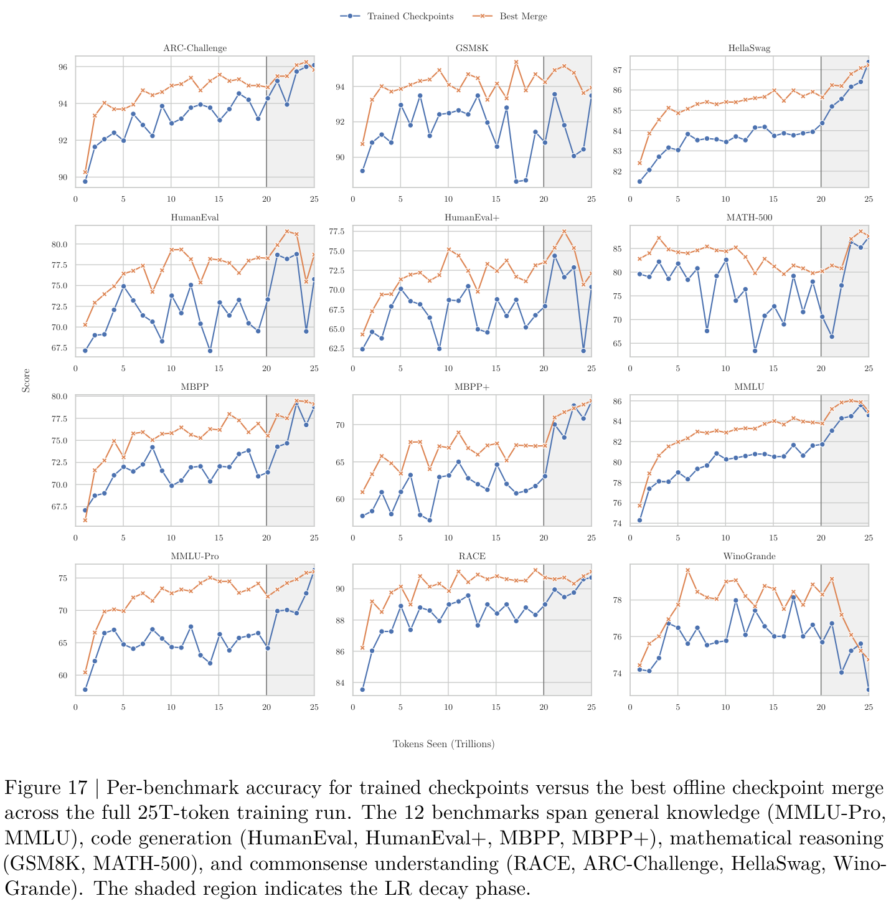
本节展示各种 PTQ 算法的评估准确率。这些实验中，除最终分类层和 attention 线性层外，所有线性层都量化为 NVFP4。
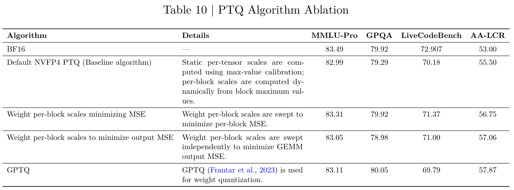
各算子的敏感度使用二阶指标，在其直接输出（或最近可用输出）处测量：
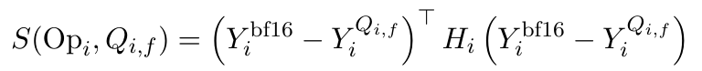
其中 \(i\) 为算子索引，\(Q_{i,f}\) 表示算子 \(i\) 在格式选择 \(f\) 下的量化算子，\(H_{i}\) 为选定测量点处的局部 Hessian 近似。测量点 \(Y_{i}\) 可以是任何将量化误差与 BF16 比较的位置；对于线性层，我们使用线性层输出。
计算完整 Hessian 成本高，因此我们采用对角 Hessian 近似，并通过对角 Fisher 信息矩阵进行经验估计。定义：
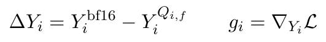
其中 \(Y_{i}\)、\(g_{i} \in \mathbb{R} ^{d}\)。得到的敏感度代理为：
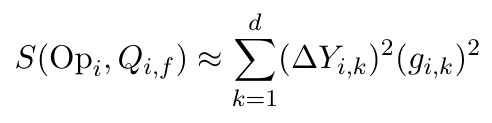
性能成本定义为：
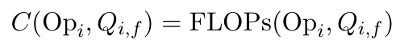
随后 AutoQuantize 求解以下约束优化：
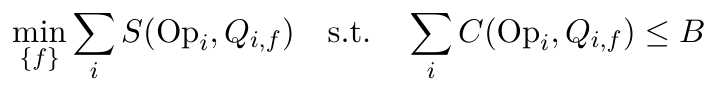
其中 \(Q_{i,f}\) 为算子 \(i\) 选定的格式，\(B\) 为部署总成本预算。
1）线性层融合。推理运行时经常融合线性算子，对融合组施加共享量化格式约束。该融合约束在每层内部应用：只融合该层的 \(Q\)、K、V 投影，并要求共享一种量化格式。对于
（本句接原文第 51 页。）
（接原文第 50 页。）
融合的 QKV 投影，我们将该组建模为一个决策变量，并聚合敏感度和成本：
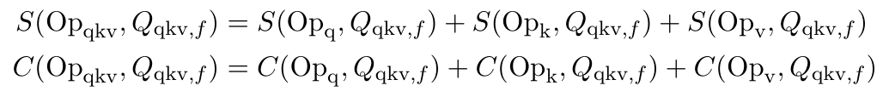
该形式在我们的二阶敏感度近似下有效：融合算子强制采用共享格式，但保留可加的分支贡献时，融合输出的二次敏感度项仍在 \(Q\)、K、V 之间保持可加性。
2）MoE 层约束。vLLM 和 TensorRT-LLM 的量化 MoE API，要求受约束 MoE 组中的全部稀疏专家共享一种量化格式。此共享格式限制也在各 MoE 层内部应用：只有同一层中的稀疏专家被耦合。在 Nemotron 3 Super 中，每个稀疏专家包含 up_proj 和 down_proj，因此这些稀疏专家投影必须联合分配。我们将稀疏专家集合表述为一个算子级决策：
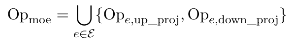
其中 moe 表示 MoE 稀疏专家组（一个 MoE 层中所有耦合的稀疏专家 up_proj/down_proj 算子）。我们在 MoE 模块输出处测量敏感度，使指标捕获所有稀疏专家的组合贡献：
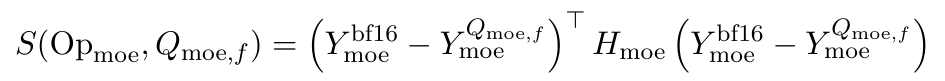
并将部署成本定义为所有稀疏专家成本之和：
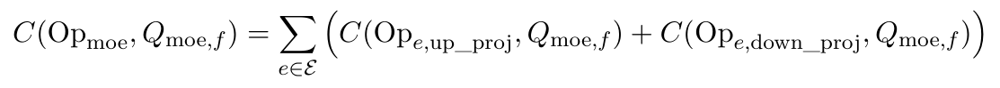
MoE 模块内其他线性层，例如潜在投影层与共享专家，不属于此稀疏专家耦合约束，可以分配不同量化格式。